Machine translation. Japanese original
LoomStroke Instruction Manual
We will explain how to use the paint app LoomStroke, which handles raster drawing, vector, text, multiple pages, manga production, and AI collaboration on one screen, along with actual screens. It covers all tools, all panels and their settings.
1. Introduction
Main changes since v0.3
The main functions added since the first edition of this manual (development version as of 2026-10-14) and the locations where they are explained. A list of detailed corrections is included in the package. CHANGELOG.md Please refer to
| Edition (date) | change | Description |
|---|---|---|
| v0.3（10-21） | Update to latest version without Git update.bat. Return the floating panel that went out of the screen to the inside of the screen. Changed the concentrated lines to a tapered shape suitable for manga. Display the basic node of ComfyUI in the Qt input field. | Installation and updates / shape manager / AI Effects Manager |
| v0.3.0.1〜0.3.0.4（10-22） | Console display settings for ComfyUI. text placed along the path. Automatically name the text layer from the main text. Start without AI boot_LoomStroke_noAI.bat. The environment introduced with Git update.bat Compatible. | Preferences › AI Effects / placed along the path / Installation and updates |
| v0.3.0.5〜0.3.0.6（10-23） | ``Smoothness of outline'', ``Swap start and end points'', ``Avoid overlapping characters'', anchor editing using ``Edit path'' and ``Smoothness of handles'' for path text. | placed along the path |
| v0.3.0.6.x（10-23〜10-28） | Improved safety when saving, switching pages, and undoing. Confirm unsaved status before closing/creating/opening. Leave suggestions even after closing the restore dialog. When starting for the first time, the OS display language and standard layout are used. | Restoring from autosave / new document / interface |
| v0.3.0.7.0〜0.3.0.7.10（10-28〜10-29） | Guide, grid, composition guide, measurement tool, format guide, fill extension, print mark, streamline/flash, placing pattern along the path, cover template.[ ] Proportional/accelerated size change. Calculate the px number of A size and B size from DPI. | guide and ruler Others 6. Menu Each clause of / measurement / Start writing |
| v0.3.0.7.9〜0.3.0.7.18（10-29） | "Random", "Sequential selection" and "Combination enumeration" of live prompts. “Continuous generation” of AI Effect. Wrapping and changing the height of the live prompt field. "Copy full prompt" in the gallery. Move the Brush Size Acceleration setting to Preferences › Performance. | prompt editor / AI Effects Manager / gallery / performance |
| v0.3.0.7.19〜0.3.0.7.21（10-30） | install.bat introduced NanoBanana dependency (google-genai) as standard. Completion of translations for all 12 languages and improvement to maintain input values when switching languages. | Installation and updates |
In addition, switching the drawing color and background color (at the end of the toolbar), direct application from the filter menu, path editing "Edit line width on canvas", GPT Image 2 input layer and 2.5 series model, and categorization in the window menu have been added.
Installation and update (Windows)
| file | How to use |
|---|---|
install.bat | First time setup. If you can't find 64bit Python 3.11 or higher, in the folder without administrator privileges (.runtime) Prepare Python. NanoBanana dependency (google-genai) is also installed as standard. After completion boot_LoomStroke.bat Start with . |
update.bat | Update to latest version. If you install it with ZIP, you can get the public version without Git,user_data and replace the main unit while leaving the execution environment (the old main unit was .update-backups , and return if it fails). When installing with Git, proceed to the latest version only if there are no changes at hand. after update install.bat will be executed automatically. |
boot_LoomStroke.bat | Normal startup. |
boot_LoomStroke_noAI.bat | Start without loading AI features (--no-ai). Panels such as AI Effects Manager, AI Select, Prompt Editor, NanoBanana, GPT Image 2, ComfyUI, Gallery, etc., and the "AI Effects", "SAM 3.1", and "LoomStroke MCP" pages of Preferences are not displayed. This launch does not save the panel arrangement, so the normal launch arrangement will not change. |
Detailed instructions are included docs/user/INSTALL_AND_RUN.md Please refer to The app version is displayed in the title bar (LoomStroke v…) and Help › About LoomStroke You can check it here.
Launching and the start screen
For Windows, the installation folder boot_LoomStroke.bat Double-click to start it. Immediately after startup, a start screen appears with "New document..." and "Open..." lined up in the center. Recently used files are also listed here.
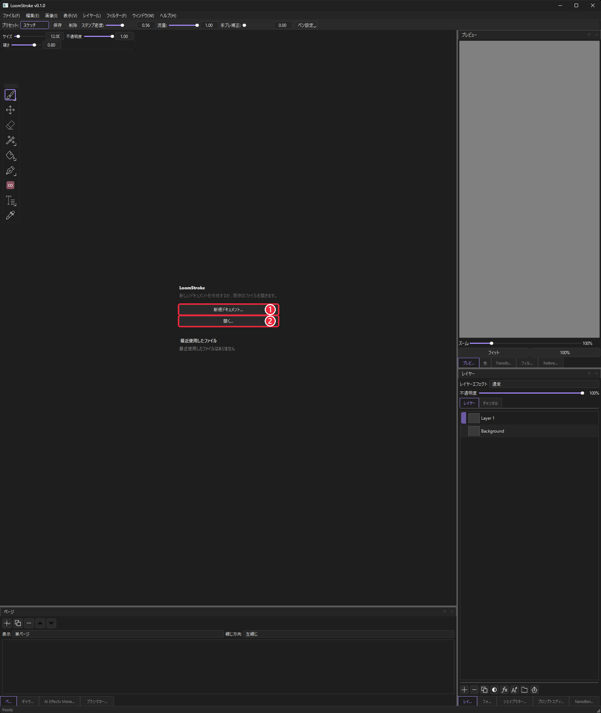
When started for the first time, the screen language is determined by searching for a compatible language in the priority order of Windows's display languages (if no compatible language is found, English is selected). The panel arrangement will be the same standard arrangement as "Reset Layout". language comes later Preferences › Interface You can change it with the "language".
boot_LoomStroke.bat(Internally python.exe Please start from ).pythonw.exe When starting from , the pen pressure may always be 0 even though the tablet is recognized.Restoring from autosave
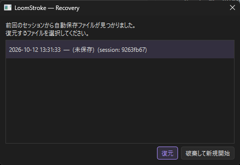
If the app is forced to close or crashes, this dialog will appear the next time you start it. The list includes the automatically saved date and time, file name (if not saved, "(unsaved)"), and session ID.
| button | operation |
|---|---|
| restoration | Open the selected autosave file and resume working. |
| Discard and start new | Clean up old unused autosave files and boot normally. |
| ×(close)/ Esc | Doesn't delete anything. Suggestions will be displayed next time as well. Candidates remain even if restoration fails. |
Auto save enable/disable and interval Preferences › File I/O Set with . If you turn off autosave, you cannot restore unsaved changes after a crash.
new document
File › New（Ctrl+N) or the button on the Start screen.
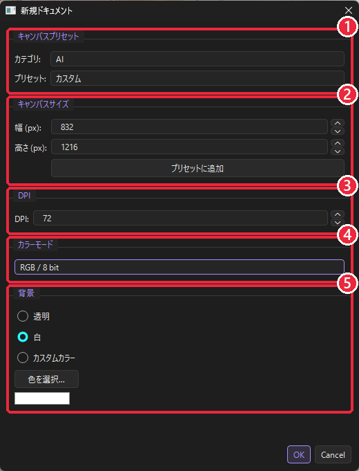
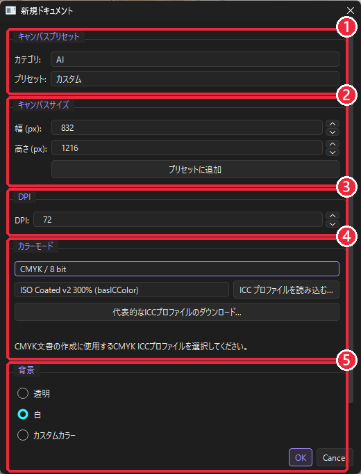
| Item | Content |
|---|---|
| 1 Category | AI / A size / B size / desktop screen / mobile screen / custom. |
| 1 preset | Size within category. In the AI category [SD1.5] 1:1 512 x 512、[SDXL/etc] 1:1 1024 x 1024 We have a wide range of resolutions for image generation models, such as |
| 2 Width/Height (px) | 1~16384 px. Save the current size as your own preset by clicking "Add to Preset". |
| 3 DPI | 1~1200. Used to calculate finished dimensions when exporting for printing. For A-size and B-size presets, changing DPI will recalculate the width and height px numbers (the px display of the preset name remains the same as when 72dpi). Manually entered dimensions and AI/screen/user presets retain px numbers. |
| 4 color mode | RGB / 8 bit、CMYK / 8 bit、CMYK / 16 bit. If you select CMYK, you will be required to select the ICC profile. |
| 4 ICC Profile (at CMYK) | Select from the included ISO Coated v2 300% / ISO Coated v2 / PSO Uncoated ISO12647 / ISO Newspaper v4 26 / PSO LWC Improved / SC paper (basICColor) and APTEC Offset 2025. Add the .icc you have with "Load ICC profile..." and open the list of official distribution pages for each region with "Download representative ICC profiles...". |
| 5 background | Transparent / White / Custom color (specified with "Select color..."). |
When you create a new document, the display of the composition guide used in the previous document will be initialized. If there are unsaved changes to the open document, you will be asked to confirm "unsaved changes" before creating a new document, opening, closing, or exiting (3 choices: save, discard, or cancel. The button may be displayed in English). If the save fails or you cancel the save destination specification, the original document remains without closing.
How to view the screen
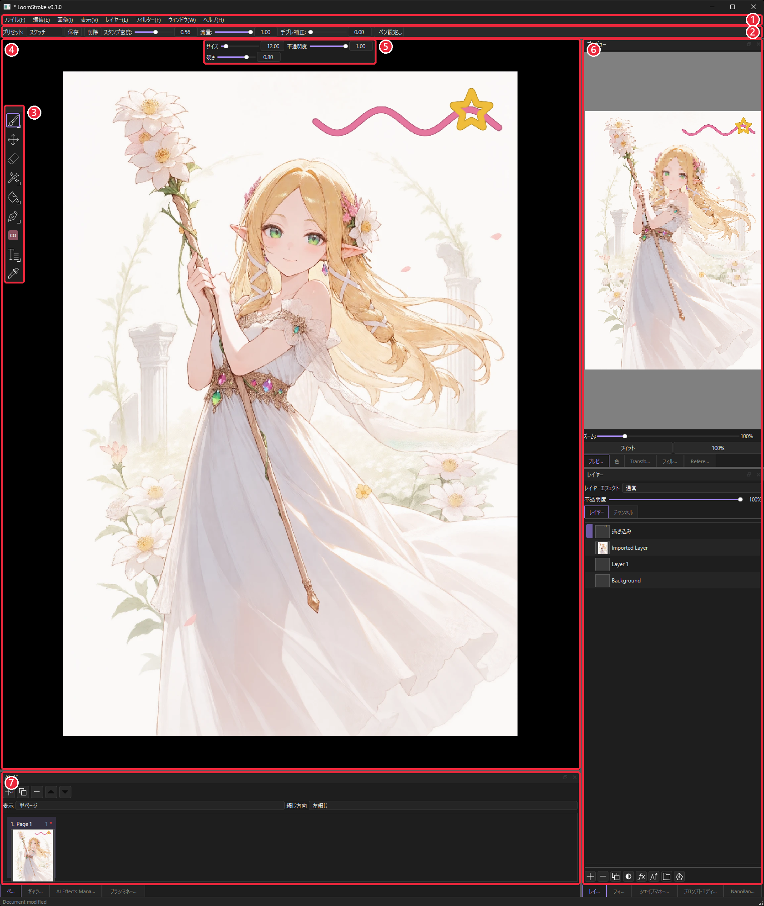
| location | Content |
|---|---|
| 1 top | Menu bar (File/Edit/Image/View/Layer/Filter/Window/Help) |
| 2 Directly below the menu | Tool property bar. The presets, main settings, and "Tool settings" button (detailed settings) for the selected tool are displayed. |
| 3 left end | toolbar. Tools are arranged in groups (Described later). At the end there is a switch between drawing color and background color. |
| 4 center | canvas. A place to draw. |
| 5 top of canvas | Contextual toolbar. You can change settings depending on the tool (size, opacity, hardness for pens) on the spot. |
| 6 right side | Panels such as preview layers. Switch to Font / Shape Manager / Prompt Editor / NanoBanana etc. in the tabs at the bottom. |
| 7 lower side | page panel. Switch tab to Gallery / AI Effects Manager / Brush Manager. |
Panels can be moved, tabbed, or floated by dragging the title part. Show/hide window To return the menu categories (layer/page/drawing/comic/AI/other) and arrangement to their initial state Window › Reset Layout。Tab screen mode to hide the panel,F11 will display in full screen. Floating panels whose title bar goes outside the screen and can no longer be operated will automatically return to the inside of the screen.
2. Your first artwork
The screenshots in this manual are taken by opening a single illustration and adding to it. You can experience the basic operations by following the same steps.
- File › Open（Ctrl+O) to open an image such as PNG. You'll have a canvas the size of your image, and your image will be a single layer.
- under the layers panel ＋Create a new layer with (Add), and double-click to change the name to something like "Drawing". If you draw on a separate layer from the original picture, the original picture will not be damaged even if you erase or move it later.
- basic pen（B) to add wavy lines and stars.
- Create a new layer and draw a circle with a pen,fill Click inside to pour the color.
- text（T) and vertical text Click on the canvas and enter text.
- Select the illustration layer filter layer By adding , you can blur or adjust colors without rewriting the original picture.
- File › Save（Ctrl+S) at
.lstrokeSave to format,File › Export（Ctrl+E) to create an image such as PNG.
3. Tools
Toolbars and groups
The toolbar on the left is tool group Buttons are arranged in units. The button with a small triangle at the bottom right has multiple tools,Long press (approx. 0.35 seconds)The flyout menu will open and you can switch between them. The button picture is the last tool used.
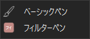
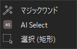
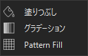
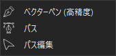
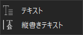
In addition, as a standalone button move、eraser、dropper、measurement There is.
Drawing color and background color
At the end of the toolbar, there are squares for the drawing color (front left) and background color (back right).
| Click on the square in front | Change the drawing color. |
| Click on the square in the back | Change the background color. The background color remains after the next startup. |
| Upper right arrow / X | Swap the foreground and background colors (Edit › Swap foreground and background colors）。 |
| Small black and white bottom left / D | Return to black and white (Edit › Reset foreground and background colors to default settings）。 |
When you select a tool,Tool property bar(directly below the menu) and Contextual toolbar The settings for that tool are displayed (on the canvas). You can call up a combination of settings with "Preset" on the left end of the bar, and manage them with "Save" and "Delete"."Tool settings"(For pens, press "Pen Settings") button to open the collapsible advanced settings. In this manual, detailed settings are shown with all sections expanded.
basic pen B
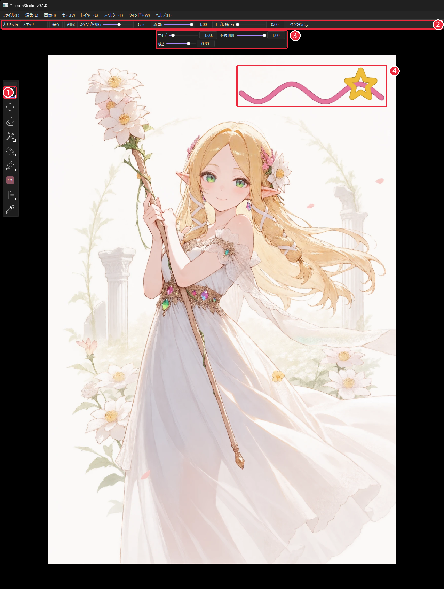
A raster brush that supports pen pressure and tilt. Presets such as "Sketch" are available, and you can also import Photoshop's ABR brushes and PNG image brush tips from the brush manager.
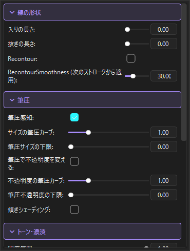
Parameter list (27 items in total)
Shortcut:B / Shift+B Presets: Sketch, Inking, Markers
| classification | Item | Range/choices | Initial value | Description |
|---|---|---|---|---|
| basic | size | 1〜128 | 12 | Brush diameter (px).[ / ] But you can change it (it will change in proportion to the current size, and if you press it repeatedly it will become faster.Acceleration settings）。 |
| basic | Opacity | 0〜1 | 1 | The total darkness of one line. |
| basic | hardness | 0〜1 | 0.8 | The sharpness of the edges. 0 means vague, 1 means clear. |
| basic | flow rate | 0〜1 | 1 | Amount of ink to put in one stamp. If it's low, it will get darker little by little as you layer it. |
| basic | stamp density | 0〜1 | 0.56 | Fineness of the interval between brush marks. The higher it is, the smoother the line will be without noticeable seams. |
| basic | Image stabilization | 0〜1 | 0 | Strength of image stabilization. The higher the setting is, the smoother the fluctuation of the line will be (drawing follows with a slight delay). |
| line shape | entry length | 0〜2000 | 0 | The length of the thinning (entering) at the beginning of the drawing. 0 disables. |
| line shape | length of extraction | 0〜2000 | 0 | Length of thinning (cutting) at the end of the drawing. 0 disables. |
| line shape | Recontour | on/off | off | Reshape the outline of the finished line (smooth any wobbles). |
| line shape | RecontourSmoothness (applied from next stroke) | 0〜100 | 30 | Strength to adjust contours. Changes will be reflected from the next line you draw. |
| Pen pressure | Pen pressure sensing | on/off | on | Reflects the pen pressure of the pen tablet in the line thickness. |
| Pen pressure | size pressure curve | 0.1〜4 | 1 | Correspondence curve between pen pressure and thickness. A value of 1 makes it proportional; a value greater than 1 makes it thinner until you press it hard, and a value of less than 1 makes it thicker with a light force. |
| Pen pressure | Lower limit of pen pressure size | 0〜1 | 0 | Percentage of thickness when pressure is 0. If it is 0, the line will disappear at zero pressure, and if it is 0.3, it will be at least 30% thicker. |
| Pen pressure | Change opacity with pen pressure | on/off | off | The pen pressure is also reflected in the density of the line. |
| Pen pressure | Opacity pressure curve | 0.1〜4 | 1 | Correspondence curve between pen pressure and density (the idea is the same as the pen pressure curve for size). |
| Pen pressure | Lower limit of pen pressure opacity | 0〜1 | 0 | The percentage of darkness when the pen pressure is 0. |
| Pen pressure | tilt shading | on/off | off | Add light and shade by tilting the pen (only for tablets that support tilt detection). |
| Tone/shade | brightness range | 0〜1 | 1 | The range of brightness of tone (shade) expression. |
| Tone/shade | brightness gamma | 0.1〜2 | 0.6 | Shading curve for tone expression. |
| Paper grain/mixed colors | strength of paper grain | 0〜1 | 0 | Effect of paper grain (roughness). 0 disables. |
| Paper grain/mixed colors | paper grain size | 1〜64 | 4 | The size of the paper pattern. |
| Paper grain/mixed colors | Mixing color with base | 0〜1 | 0 | The amount by which the drawing color is mixed with the underlying color already drawn. Mixed colors in a watercolor/oil color style. |
| Spreading/variation | Spraying | 0〜3 | 0 | The amount by which brush marks are scattered left and right in the direction of line progression. |
| Spreading/variation | Size variation | 0〜1 | 0 | Amount to randomly change size for each stamp. |
| Spreading/variation | Angle variation | 0〜1 | 0 | Amount to randomly change the orientation of each stamp (the effect is visible at the tip other than the circle). |
| Spreading/variation | color variation | 0〜1 | 0 | Amount to randomly shift the color for each stamp. |
| Spreading/variation | Seed of variation | 0〜2147483647 | 1 | Random seed of variation. If the value is the same, the variation will be the same every time. |
filter pen
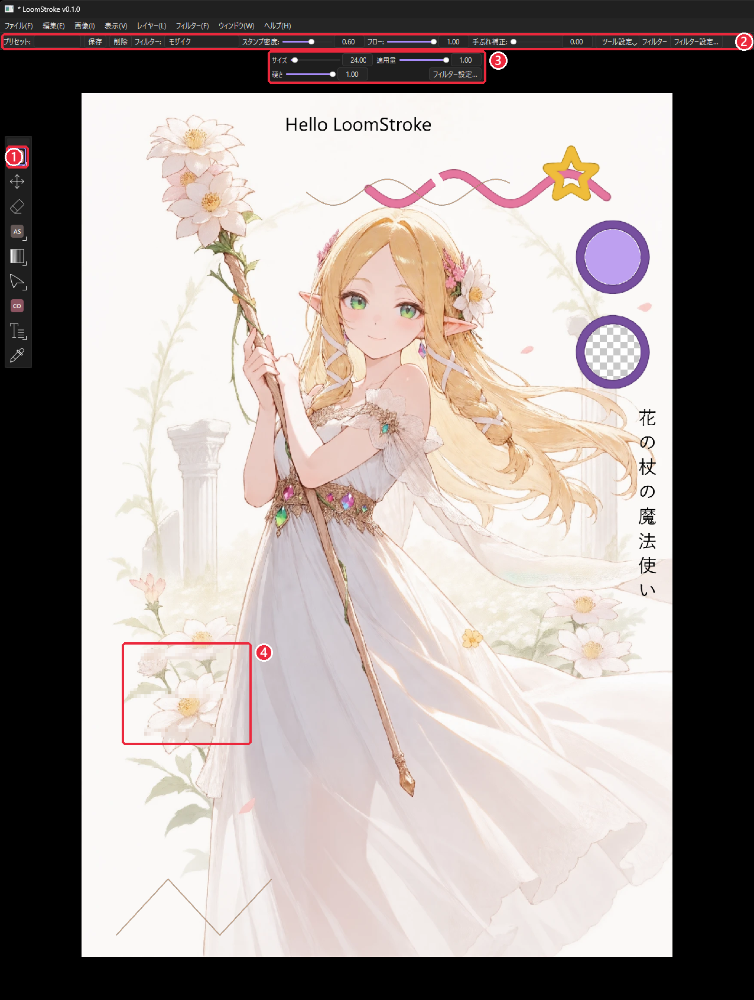
This pen applies a filter effect only to the drawn area. Use when you want to partially blur or mosaic.
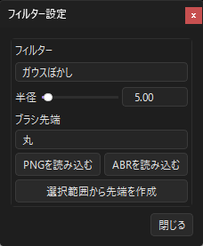
Parameter list (13 items in total)
| classification | Item | Range/choices | Initial value | Description |
|---|---|---|---|---|
| basic | filter | Gaussian blur / Level correction / Sharpening / Noise removal / Hue / Saturation / Gradation inversion / Brightness / Contrast / Tone curve / Gradient map / Mosaic / Manga screen tone | Gaussian blur | A filter to apply to the traced part. |
| basic | size | 1〜1000 | 24 | Brush diameter (px).[ / ] But you can change it (it will change in proportion to the current size, and if you press it repeatedly it will become faster.Acceleration settings）。 |
| basic | Application amount | 0〜1 | 1 | Strength of filtering (application amount). |
| basic | hardness | 0〜1 | 1 | The sharpness of the edges. 0 means vague, 1 means clear. |
| basic | stamp density | 0〜1 | 0.6 | Fineness of the interval between brush marks. The higher it is, the smoother the line will be without noticeable seams. |
| basic | flow | 0〜1 | 1 | Amount of ink to put in one stamp. If it's low, it will get darker little by little as you layer it. |
| basic | Image stabilization | 0〜1 | 0 | Strength of image stabilization. The higher the setting is, the smoother the fluctuation of the line will be (drawing follows with a slight delay). |
| line shape | Readjust the drawn lines | on/off | off | Reshape the outline of the finished line (smooth any wobbles). |
| line shape | Smoothness of readjustment (next stroke) | 0〜100 | 30 | Strength to adjust contours. Changes will be reflected from the next line you draw. |
| Pen pressure | Use pressure | on/off | on | Reflects the pen pressure in the thickness of the brush. |
| Pen pressure | Shading by tilt | on/off | off | Adjust the intensity by tilting the pen. |
| Tone/shade | tone range | 0〜1 | 1 | The range of brightness of tone (shade) expression. |
| Tone/shade | tone gamma | 0.1〜2 | 0.6 | Shading curve for tone expression. |
| filter | Filter settings... | button | — | Open the dialog and set the values specific to the selected filter (e.g. Gaussian blur radius, mosaic cell size) and brush tip (circle/"Load PNG", "Load ABR", "Create tip from selection"). |
operation button
| filter | Filter settings... (Opens filter settings dialog) |
eraser E
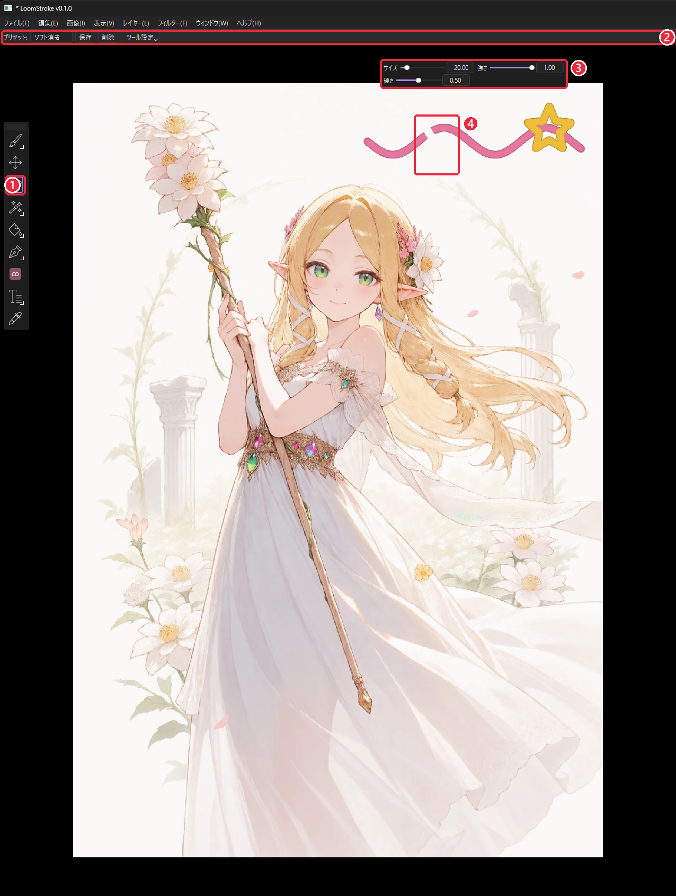
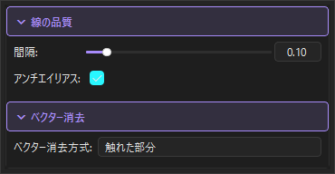
Parameter list (6 items in total)
Shortcut:E / Shift+E Preset: Soft Erase, Edge Adjustment
| classification | Item | Range/choices | Initial value | Description |
|---|---|---|---|---|
| basic | size | 1〜200 | 20 | Brush diameter (px).[ / ] You can change it in 2px increments (the eraser is not proportional or accelerated). |
| basic | strength | 0〜1 | 1 | The strength to erase. A setting of 1 turns it off completely, and a setting of 1 turns it off completely, while a setting of 1 turns it off completely, and a setting of 1 just makes it thinner. |
| basic | hardness | 0〜1 | 0.5 | The sharpness of the edges. 0 means vague, 1 means clear. |
| line quality | interval | 0.01〜1 | 0.1 | Spacing between eraser marks (as a percentage of the diameter). The smaller the smoother. |
| line quality | antialiasing | on/off | on | Smooth out the erased edges. |
| vector erase | Vector elimination method | Touched area/Entire line/Up to intersection | touched part | Range when erasing vector layers. Touched area = only the rubbed area, entire line = the entire touched line, up to the intersection = the section separated by the intersection with another line. |
fill
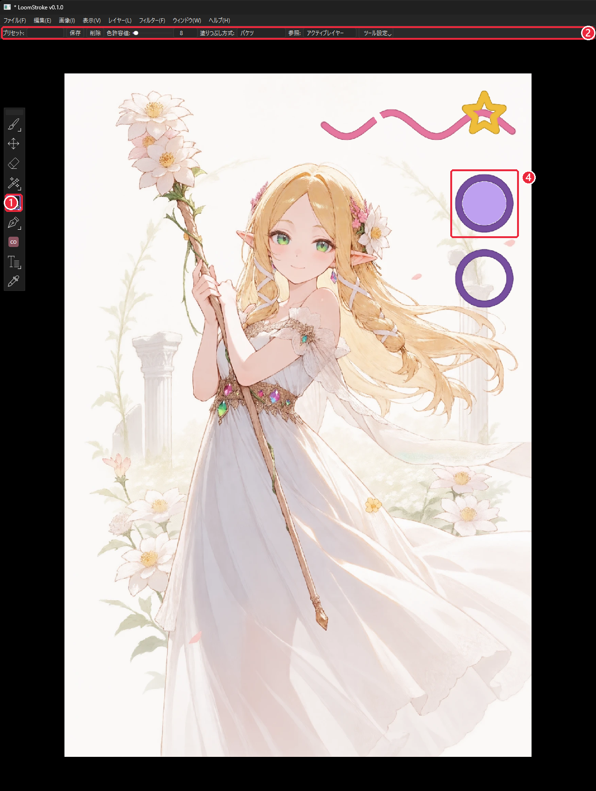
Paints a similar color range connected to the clicked position.
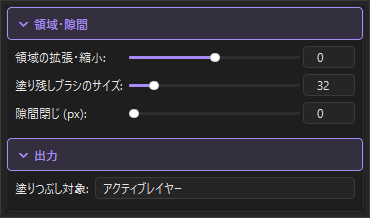
Parameter list (7 items in total)
| classification | Item | Range/choices | Initial value | Description |
|---|---|---|---|---|
| basic | Fill method | Bucket / Enclose and paint / Paint the remaining areas | bucket | Bucket = Paints the area connected to the clicked area. Encircling and painting = Painting the area surrounded by dragging. Painting unfilled areas = Filling in unfilled areas (white between lines) traced with a brush. |
| basic | Reference | Active layer/display layer | active layer | A picture used to determine boundaries. Active layer = only the selected layer, visible layer = composite of all visible layers (used to paint on a separate layer while looking at the line drawing layer). |
| basic | color tolerance | 0〜255 | 8 | Width considered as "similar colors". The larger it is, the more it will spread to areas of different colors. |
| Area/Gap | Expansion/shrinkage of area | -16〜16 | 0 | Number of pixels to widen (+)/narrow (-) the painted area. When you want to fill in to the bottom of the line. |
| Area/Gap | Unpainted brush size | 1〜256 | 32 | The size of the brush used for "painting unfilled areas". |
| Area/Gap | Close gap (px) | 0〜10 | 0 | Paint by assuming that the break in the line is covered to this width. |
| output | Fill target | Active layer / new layer | active layer | Where to paint. Active layer or new layer for filling. |
gradation
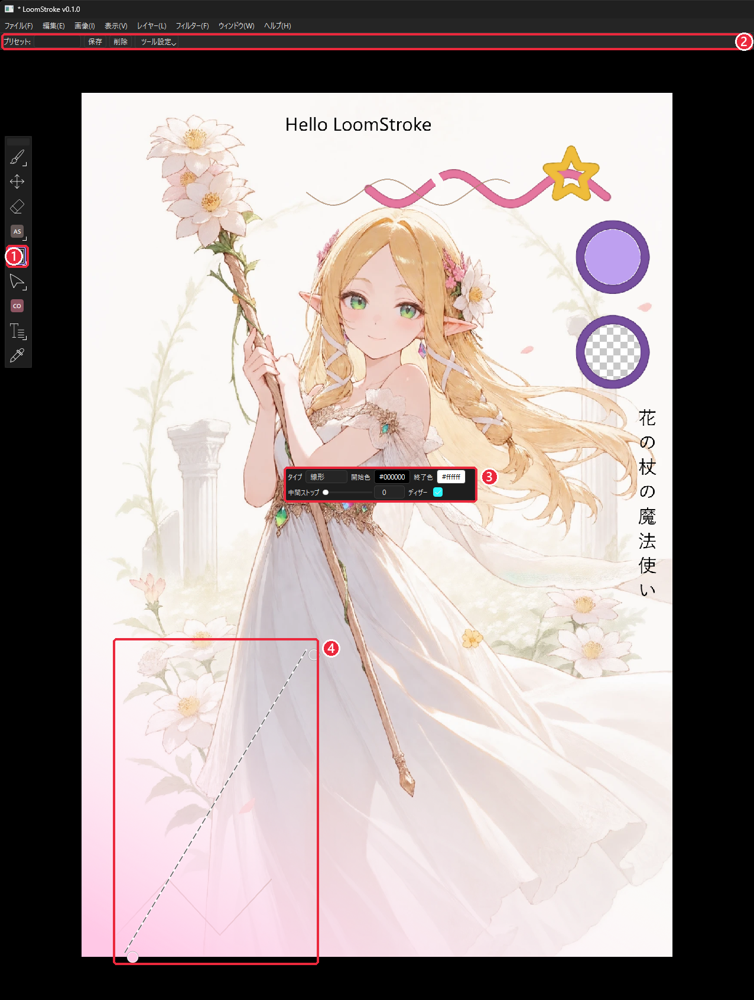
- Drag on the canvas from the start point to the end point. Not yet at this point preview It is.
- Adjust the type (linear/circular), start/end color, number of intermediate stops, and dither on the context toolbar.
- You can drag the pin on the line to change its position, or click on the line to add a color relay point (Ctrl+Click to delete).
- Enter Or click somewhere away from the line to confirm.Esc to cancel.
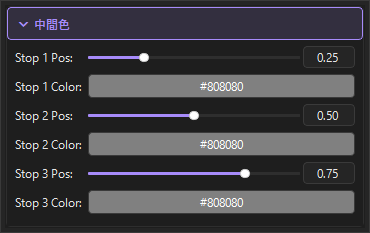
Parameter list (11 items in total)
| classification | Item | Range/choices | Initial value | Description |
|---|---|---|---|---|
| basic | type | linear/radial | linear | Linear = straight line direction, radial = spread out in a circle from the center. |
| basic | starting color | color | #000000 | Color of starting point. |
| basic | ending color | color | #FFFFFF | Color of the end point. |
| neutral color | intermediate stop | 0〜3 | 0 | The number of color relay points inserted in the middle. |
| neutral color | Stop 1 Pos | 0〜1 | 0.25 | Position of relay point 1 (0 = start point, 1 = end point). |
| neutral color | Stop 1 Color | color | #808080 | Color of waypoint 1. |
| neutral color | Stop 2 Pos | 0〜1 | 0.5 | Location of waypoint 2. |
| neutral color | Stop 2 Color | color | #808080 | Color of waypoint 2. |
| neutral color | Stop 3 Pos | 0〜1 | 0.75 | Location of waypoint 3. |
| neutral color | Stop 3 Color | color | #808080 | Color of waypoint 3. |
| output quality | dither | on/off | on | Mix fine grains to make color differences (banding) less noticeable. |
| operation | pin on line | — | — | Move the relay point by dragging, add a relay point by clicking on the line,Ctrl+Click to delete.Enter Confirmed with Esc Cancel with. |
pattern fill
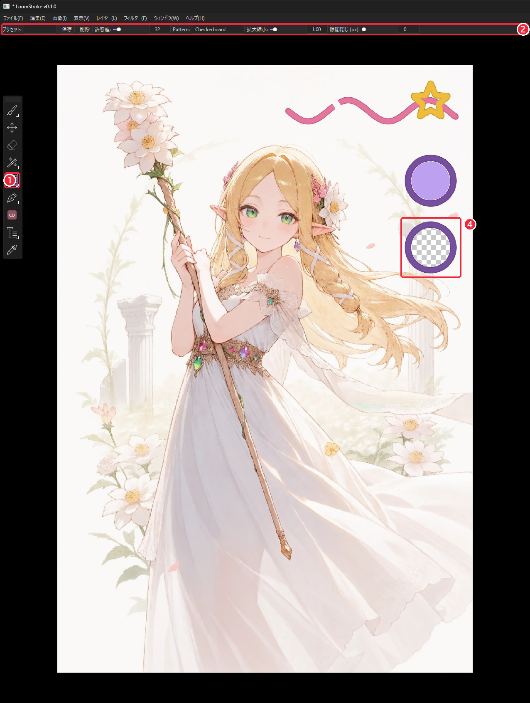
Parameter list (all 4 items)
| classification | Item | Range/choices | Initial value | Description |
|---|---|---|---|---|
| — | Pattern | Checkerboard / Horizontal Stripes / Vertical Stripes / Diagonal Stripes / Dots / Crosshatch | Checkerboard | Pattern to paint. Checkered, horizontal stripes, vertical stripes, diagonal stripes, dots, cross hatch. |
| — | Scaling | 0.1〜10 | 1 | Magnification of pattern size. |
| — | Tolerance | 0〜255 | 32 | The width of the color that determines the area to be painted. |
| — | Close gap (px) | 0〜10 | 0 | Paint by assuming that the break in the line is covered to this width. |
magic wand
Automatically selects a range of colors similar to the clicked position. If you change the tolerance value, the last clicked position will be reselected.Shift Add with,Alt Exclude with,Shift+Alt Intersect at.
Parameter list (all 3 items)
| classification | Item | Range/choices | Initial value | Description |
|---|---|---|---|---|
| — | Tolerance | 0〜255 | 32 | The width that is considered a "similar color" to the clicked color. If you change it, the previous click position will be reselected. |
| — | adjacent | on/off | on | On = Selects only the range connected to the clicked position, Off = Selects all similar colors in the entire image. |
| — | operation | Replace / add / remove / common part | Replace | Merge with existing selection (replace/add/remove/intersection). |
AI Select
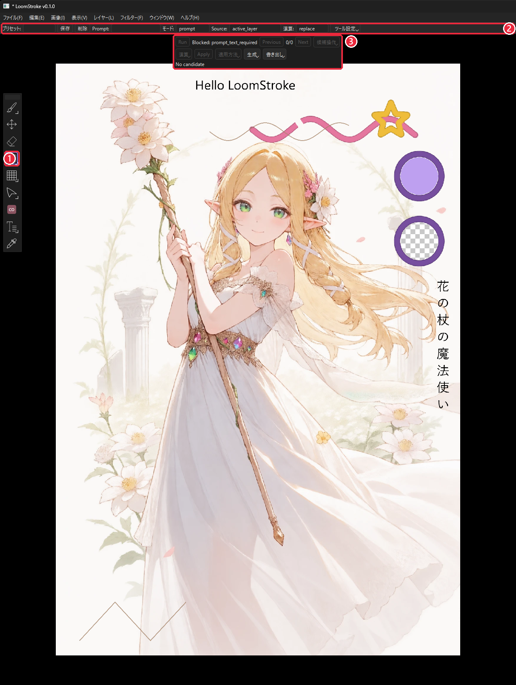
AI segmentation with SAM 3.1 allows you to create selections from text prompts (e.g. “hair”, “people”) or clicks.candidate I will make For use Preferences › SAM 3.1 setup is required. (The introduction method is SAM 3.1 Installation Guide）
Contextual toolbar operations
| operation | Content |
|---|---|
| Prompt / Mode / Source / Operation | Properties bar. What to look for, whether to prompt or click, what to target (such as the active layer), and how to combine with existing selections. |
| Run | Run discovery. When no prompt is entered Blocked: prompt_text_required is displayed. |
| Previous / Next | Cycle through the candidates (0/0 is the number of candidates). |
| Candidate operation/calculation/application method | A menu for selecting the composite/selection range of candidates and how to apply them as a mask. |
| Apply | Applies the current suggestion as a selection. |
| Generate/Export | A menu that allows you to use candidates as AI-generated masks, export them as cutout materials or sprites, etc. |
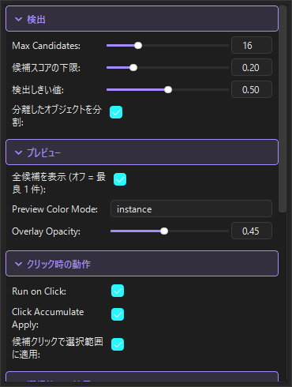
Parameter list (24 items in total)
| classification | Item | Range/choices | Initial value | Description |
|---|---|---|---|---|
| basic | Prompt | string | (empty) | Specify what you want to look for in text (e.g. hair, person, cane). Use in prompt mode. |
| basic | mode | prompt / click / box / exemplar / mixed | prompt | How to direct candidates. prompt = text, click = clicked point (Shift Add with,Alt ), box = dragged square, exemplar = sample image, mixed = combination of points and squares. |
| basic | Source | active_layer / visible_composite / selection_bounds / page | active_layer | Image to analyze. active_layer = selected layer, visible_composite = displayed composite result, selection_bounds = inside selection range, page = entire page. |
| basic | calculation | replace / add / subtract / intersect | replace | Composite method (replace/add/subtract/intersect) when applying candidates as a selection. |
| detection | Max Candidates | 1〜64 | 16 | Maximum number of candidates to submit at one time. |
| detection | lower limit of candidate score | 0〜1 | 0.2 | Candidates with lower confidence than this will not be displayed. |
| detection | detection threshold | 0.05〜0.95 | 0.5 | Sensitivity to confirm the mask. Crop out wider if it's low and narrow if it's high. |
| detection | Split separate objects | on/off | on | Separate distant parts into separate candidates. |
| preview | Show all suggestions (off = best 1) | on/off | on | Display all candidates on top of each other. Only one of the best off. |
| preview | Preview Color Mode | single / instance / heat | instance | Color coding of candidates. single = 1 color, instance = color-coded for each candidate, heat = reliability level. |
| preview | Overlay Opacity | 0〜1 | 0.45 | The color intensity of the candidate. |
| Behavior when clicked | Run on Click | on/off | on | Click to run discovery immediately. |
| Behavior when clicked | Click Accumulate Apply | on/off | on | Each click stacks the results into the selection. |
| Behavior when clicked | Apply to selection on candidate click | on/off | on | Click on a candidate to make it a selection. |
| Selection boundaries | Automatic mask cleanup | on/off | on | Automatically removes small dirt and holes. |
| Selection boundaries | Composite mode | union / subtract / intersect / xor | union | A method for combining multiple candidates (union = combine / subtract = subtract / intersect = overlap / xor = non-overlapping). |
| Selection boundaries | Apply Edge Feather (px) | 0〜16 | 1 | Width (px) to feather the border when applied. |
| Selection boundaries | Apply Edge Smooth (px) | 0〜16 | 1 | Width (px) to smooth out jagged edges when applied. |
| Selection boundaries | Edge Tightness | -16〜16 | 0 | Amount (px) to move the border inward (-)/outward (+). |
| Start writing | Export Padding (px) | 0〜64 | 0 | Margin (px) to add around the cutout when exporting. |
| Start writing | Export Source | active_layer / composite | active_layer | The source of the image to be exported. active_layer = currently selected layer, composite = currently displayed composite result. |
| Start writing | Sheet margin (px) | 0〜16 | 2 | The space left between materials in a sprite sheet. |
| Start writing | Make the sheet a power of 2 | on/off | off | Align the height and width of the sprite sheet to powers of 2 (256, 512, 1024...) (for game engines). |
| Start writing | sheet format | png / webp | png | Sprite sheet format (png/webp). |
selection (rectangle)
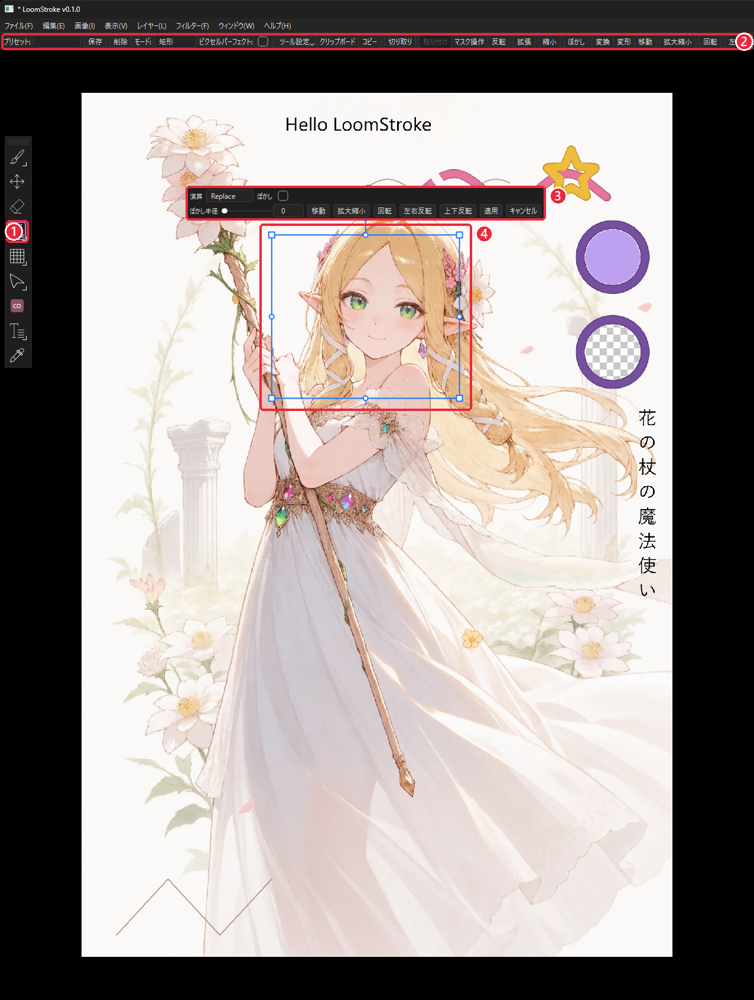
The property bar includes the mode (rectangle/vector range), pixel perfect, clipboard (copy/cut/paste), mask operation, flip, expand/shrink/blur, convert/transform/move/scale/rotate/horizontally flip, etc. The context toolbar allows you to set operations (Replace/Add/Exclude/Intersect) and blur (Blur radius). To deselect Ctrl+D。
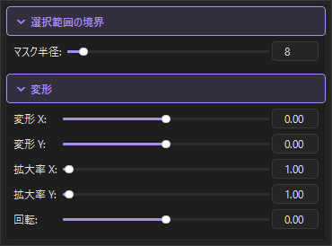
Parameter list (11 items in total)
| classification | Item | Range/choices | Initial value | Description |
|---|---|---|---|---|
| basic | mode | Rectangle / Vector / Ellipse / Lasso / Polygon | rectangle | form of choice. Rectangle/Ellipse = Square or circle by dragging, Lasso = Shape traced by dragging, Polygon = Shape with vertices placed by clicking, Vector = Select a vector object by range. |
| basic | calculation | Replace / Add / Subtract / Intersect | replacement | Merge with existing selection. Replace/Add (Shift)/subtraction (Alt)/intersection (Shift+Alt）。 |
| basic | pixel perfect | on/off | off | Aligns the selection border to an integer number of pixels. |
| Selection boundaries | Blur | on/off | off | Blurs the edges of the selection. |
| Selection boundaries | Blur radius | 0〜128 | 0 | Blur width (px). |
| Selection boundaries | mask radius | 0〜128 | 8 | Width (px) used for expanding/reducing/blurring "mask operation". |
| deformation | Transformation X | -10000〜10000 | 0 | Amount of lateral movement during deformation. |
| deformation | Deformation Y | -10000〜10000 | 0 | Amount of vertical movement during deformation. |
| deformation | Magnification factor X | 0.01〜100 | 1 | Horizontal magnification during transformation. |
| deformation | Magnification rate Y | 0.01〜100 | 1 | Vertical magnification during transformation. |
| deformation | rotation | -180〜180 | 0 | Rotation angle during deformation. |
operation button
| clipboard | Copy (copy selection), Cut (cut selection), Paste (paste) |
| mask operation | Invert (invert the selected range), Expand (widen by the mask radius), Reduce (narrow by the mask radius), Blur (blur by the mask radius), Convert (convert the selected range to a mask, etc.) |
| deformation | Move (move the contents of the selection range), Scale (enlarge/reduce), Rotate (rotate), Flip horizontally (flip horizontally), Flip vertically (flip vertically), Reset (undo the transformation), Apply (confirm the transformation), Cancel (cancel the transformation) |
move V
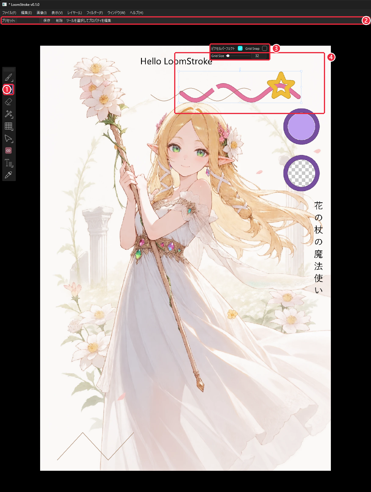
Drag the selected layer to move it. If there is a selected area, cut that part and move/transform it. Vectors and text move object by object, and double-clicking switches to path editing or text editing.
Parameter list (all 3 items)
Shortcut:V
| classification | Item | Range/choices | Initial value | Description |
|---|---|---|---|---|
| — | pixel perfect | on/off | on | Adjust the amount of movement to an integer pixel (preventing dot pictures and lines from blurring). |
| — | Grid Snap | on/off | off | It will stick to the grid when moving. |
| — | Grid Size | 1〜1024 | 32 | Spacing of the grid to snap to (px). |
Vector pen (high precision) P
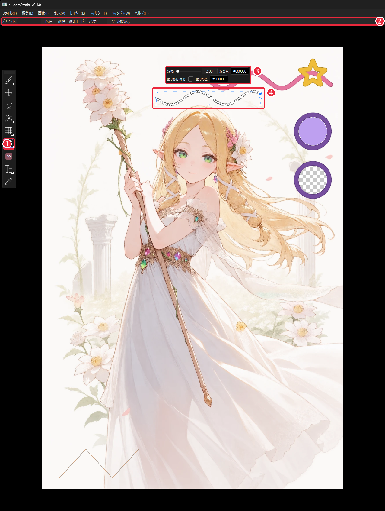
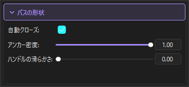
Parameter list (8 items in total)
Shortcut:P
| classification | Item | Range/choices | Initial value | Description |
|---|---|---|---|---|
| basic | Edit mode | anchor/shape | anchor | How to edit after drawing. Anchor = Directly move points and handles, Shape = Treat as a whole shape. |
| basic | line width | 0.1〜64 | 2 | Line thickness. |
| basic | line color | color | #000000 | Line color. |
| fill | Enable fill | on/off | off | Paint the inside of the closed shape. |
| fill | fill color | color | — (not set) | Inner fill color. |
| path shape | auto close | on/off | on | When you finish drawing near the starting point, it becomes a closed path. |
| path shape | anchor density | 0.1〜1 | 1 | Many anchors made from freehand lines. The lower the level, the fewer points there are and the smoother it is. |
| path shape | smoothness of the handle | 0〜5 | 0 | Smooth curved handle. |
pass
Click to place the anchor and drag to attach the curved handle. It will close automatically when you return near the starting point.Enter Confirmed with Esc Discarded.
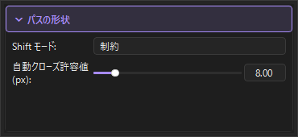
Parameter list (6 items in total)
| classification | Item | Range/choices | Initial value | Description |
|---|---|---|---|---|
| basic | line width | 0.1〜64 | 2 | Line thickness. |
| basic | line color | color | #000000 | Line color. |
| basic | Enable fill | on/off | off | Paint the inside of the closed shape. |
| fill | fill color | color | — (not set) | Inner fill color. |
| path shape | Shift mode | Constraints/Snap disabled | constraints | Shift What happens when you press . Constraints = Fixed angle, Snap disabled = Suction is temporarily turned off. |
| path shape | Auto-close tolerance (px) | 0〜64 | 8 | Clicking within this distance from the starting point will create a closed path. |
Edit path
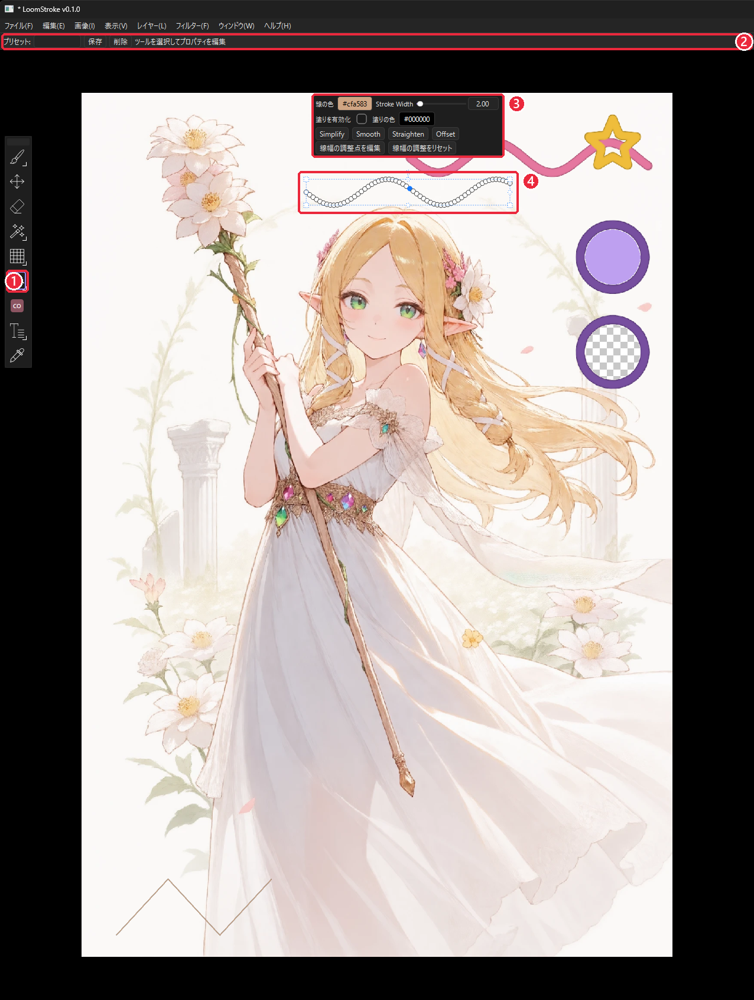
Drag the anchor to move it, and use the handle to adjust the degree of bending.Alt+Drag to duplicate,Ctrl Temporarily disable snapping. Basic shapes that remain as they are (unconverted) can be edited with rounded corners, number of vertices, etc. using special handles.
| Simplify / Smooth / Straighten / Offset | Reduce anchors / smooth curves / straighten / create duplicates with shifted lines. |
| Edit/reset line width adjustment | Edit and initialize the thickness of each line location (variable line width). |
Edit line width on canvas When turned on, you can create a thickness adjustment point by dragging the center line of the line, and change the thickness (0 to 512 px) by dragging the adjustment point or the left and right handles.Alt+Click to delete adjustment points, while dragging Esc Cancel with. The path shape and anchor remain the same, and each drag is an undo. The target is a single unlocked path, and the adjustment points are up to 64 points (compound paths, parametric shapes, and characters are not applicable).
Parameter list (5 items in total)
| classification | Item | Range/choices | Initial value | Description |
|---|---|---|---|---|
| — | Edit line width on canvas | on/off | off | While on, adjust the line width by dragging on the canvas (see above). |
| — | line color | color | #000000 | Line color. |
| — | line width | 0.1〜128 | 2 | Line thickness. |
| — | Enable fill | on/off | off | Paint the inside of the closed shape. |
| — | fill color | color | — (not set) | Inner fill color. |
text T
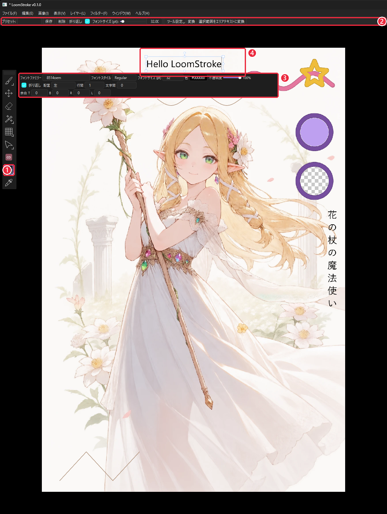
1 line with a click point text, wrap within the frame by dragging area text I will make It supports Japanese input (IME), and when you type, a text layer is added to the layer panel. The layer name will be automatically added from the first 10 characters of the text when confirmed (the name you gave will not change). "Convert selection to area text" allows you to insert text into shapes and selections.
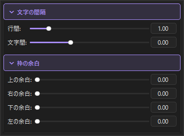
Font, style, placement, color, opacity, etc. can be changed using the context toolbar or font panel Set with .
Parameter list (8 items in total)
Shortcut:T
| classification | Item | Range/choices | Initial value | Description |
|---|---|---|---|---|
| basic | Font size (pt) | 1〜512 | 32 | Font size (pt). |
| basic | turn back | on/off | on | Area text wraps at the edge of the frame. |
| character spacing | Between the lines | 0.5〜4 | 1 | Line spacing (magnification of font size). |
| character spacing | character spacing | -64〜128 | 0 | spacing between letters. Pack it with a minus. |
| frame margin | top margin | 0〜256 | 0 | Inner margin above the text frame. |
| frame margin | right margin | 0〜256 | 0 | Right inner margin. |
| frame margin | bottom margin | 0〜256 | 0 | Bottom inner margin. |
| frame margin | left margin | 0〜256 | 0 | Left inner margin. |
operation button
| conversion | Convert the selection range to area text (Create area text that flows text into a frame shaped like the selection range) / Place along the path (see below) |
placed along the path
"Convert" in the tool settings, or in the context toolbar.placed along the path, arrange the letters along the outline of the line or shape. The contours to be used are determined in the following order:
- Selected vector (either open path or closed shape is acceptable. Center line is used even for thick lines)
- If no vector is selected, the selection outline
- If neither is present, the outer outline of the opaque part of the selected raster layer (does not use holes)
If only the text is selected or the outline is missing, the reason will be displayed in the status bar. The outline at the time of creation is copied, so even if you move the original shape later, the text will not follow. Horizontal writing only. The "Place along path" window will open and you can type in the canvas or "Body" field.Ctrl+Enter Confirm with .
| Item | Range/choices | Initial value | Description |
|---|---|---|---|
| Start position (%) / End position (%) | 0〜100 | 0 / 100 | Where to place the text on the outline. You can also change the start and end handles on the canvas by dragging them along the outline. |
| Distance from path (px) | -10000〜10000 | 0 | Distance to separate the text from the line. |
| Reverse direction of travel | on/off | off | Reverse the direction of text. |
| Use all around | on/off | on in closed form | Uses the entire circumference of the closed shape (can only be selected when the shape is closed). |
| Rotate text along path | on/off | on | Tilt the text to match the direction of the line. |
| alignment | Start / Center / End / Evenly distributed | start | How to arrange characters within an interval. |
| contour | List of candidates | — | When there are multiple contours, select the contour to use when creating. |
| smoothness of contour | 0〜100 | 0 | The higher the value, the more fine irregularities will be ignored. When released, it is reflected as one "undo", and with 0 it returns to the original outline. |
| Avoid overlapping characters | on/off | off | If characters overlap due to a sharp turn, the characters behind are sent first. |
| Swap the start and end points | button | — | Swap only the ends. Press it again to return to normal. |
| edit path | button (on/off) | — | Add anchor by clicking on the line,Alt+ Click to delete, drag the anchor or handle to change the shape.S Smooth / C corner / B Handle separation / M Symmetry.Esc Ends with. The original image or shape remains unchanged. |
| smoothness of the handle | 0 to 5 (0.1 increments) | 0 | Creates a Bezier handle that can be edited using the same correction as the vector pen. 0 returns to before correction. |
| Edit text | button | — | Move to the "Body" field. Long text will be displayed wrapped by the width of the column (line breaks will not be included). |
If there are characters that do not fit within the specified interval, the message ``There are characters that do not fit within the specified interval. All text is retained.'' is displayed. The protruding characters are not drawn, but remain in the main text. Even after finalizing the text, you can re-edit it in this window by clicking on the text.
vertical text
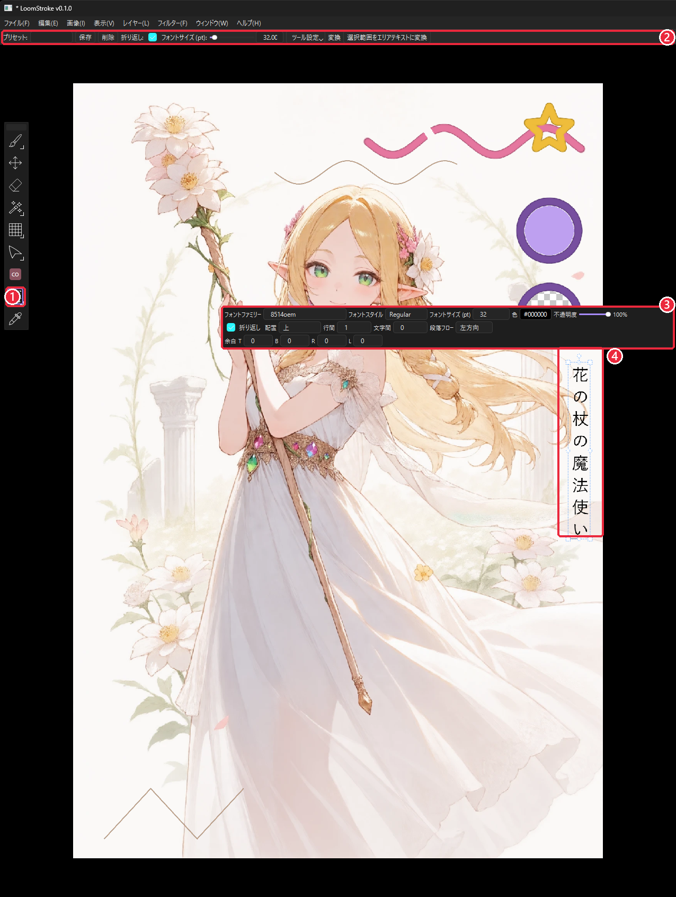
This is a text tool exclusively for vertical writing. Automatically corrects the position of punctuation marks and rotates long notes.
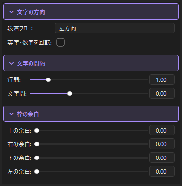
Parameter list (10 items in total)
| classification | Item | Range/choices | Initial value | Description |
|---|---|---|---|---|
| basic | Font size (pt) | 1〜512 | 32 | Font size (pt). |
| basic | turn back | on/off | on | Area text wraps at the edge of the frame. |
| character direction | paragraph flow | Left direction / Right direction | left direction | Direction to send the line. Left direction (normal Japanese vertical writing)/right direction. |
| character direction | Rotate letters and numbers | on/off | off | Displays half-width alphanumeric characters in vertical text upright (when off, they are displayed horizontally). |
| character spacing | Between the lines | 0.5〜4 | 1 | Line spacing (magnification of font size). |
| character spacing | character spacing | -64〜128 | 0 | spacing between letters. Pack it with a minus. |
| frame margin | top margin | 0〜256 | 0 | Inner margin above the text frame. |
| frame margin | right margin | 0〜256 | 0 | Right inner margin. |
| frame margin | bottom margin | 0〜256 | 0 | Bottom inner margin. |
| frame margin | left margin | 0〜256 | 0 | Left inner margin. |
operation button
| conversion | Convert the selection range to area text (Create area text that flows text into a frame shaped like the selection range) |
dropper I
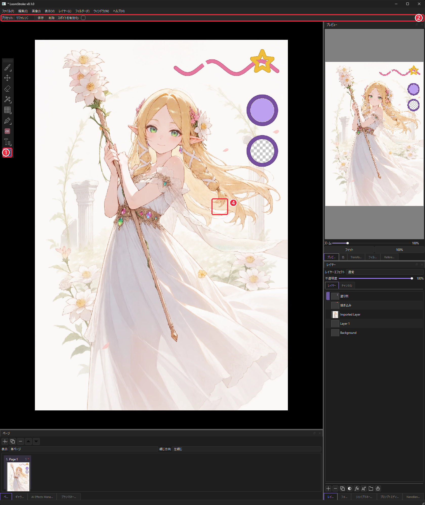
Click the color on the canvas to make it the drawing color. There are presets such as ``Reference'', and you can switch the behavior with ``Enable Eyedropper''.
Parameter list (1 item total)
Shortcut:I / Shift+I Preset: Match reference, Palette only
| classification | Item | Range/choices | Initial value | Description |
|---|---|---|---|---|
| — | Enable eyedropper | on/off | off | When turned on, colors will be picked up by clicking on the canvas. |
measurement
A tool that measures the distance, angle, and vertical/horizontal difference between two points. When you drag on the canvas, a yellow line and “Distance: … | Angle: …° | ΔX: … | ΔY: …” will be displayed. The angle is -180 to 180°, with 0° pointing to the right and positive pointing downward. The unit is the unit of the page ruler, and is converted using the document's DPI (default value is px). The endpoints will be attached to the guide/composition guide, and if "Snap to Grid" is turned on, they will also be attached to the grid.Esc Or turn off the display by switching pages. Measurements are not recorded in the history and there are no setting items.
Comic
This is a tool that allows you to directly manipulate frame borders and balloons on the canvas.Comic panel In conjunction with , you can drag and adjust the borders of the frame borders, balloons, and tails. It will also switch automatically when you double-click a frame or balloon with the move tool. There are no settings for this tool itself; settings are made in the Comic panel.
4. Layers and filters
layer panel
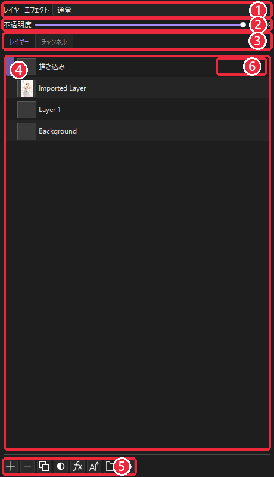
They are displayed one above the other in order from the top. The line with a purple bar on the left side is the one to be drawn.
| part | Content |
|---|---|
| 1 layer effects | How to combine this layer with the layer below (List）。 |
| 2 Opacity | The overall density of the layer (0-100%). |
| 3 layer/channel | Switching the displayed tabs (channel）。 |
| 4 Click on a row | Target for drawing.Ctrl/Shift+ Click to select multiple. |
| 4 double click on row | Rename. |
| 4 Dragging a row | Change stacking order, add/remove items to groups. |
| 6 Icon on the right side of the row | It appears when you mouse over it.Protection of transparent parts(Alpha lock: You can only draw where you draw),lock(editing prohibited),Display switching(eyes). |
| type mark | text T, vector V etc. |
5 Bottom button (from left)
| Add | New raster layer. |
| Delete | Delete the selected layer. |
| Reproduction | Duplicate the selected layer. |
| Mask | Add layer mask (delete if it already exists). |
| Add filter layer | Adjustment layer/filter layer/fill layer menu (Described later）。 |
| Add AI Effect Layer | Add layers from installed AI effect presets ("No presets installed" if not installed). |
| group | Groups two or more selected layers. |
| Add Vector Layer | New vector layer. |
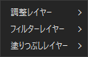
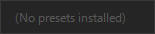
Layer effect (compositing method)
This is the layering method selected in the "Layer Effect" field with the layer below. The picture itself will not be rewritten, only the way it looks will change. Opacity affects the strength of this composite result.
| classification | mode | Features |
|---|---|---|
| Normal | Normal/dither synthesis | Layer as is. Dithering makes semi-transparent areas look grainy. |
| Comparison (dark) | Comparison (Dark) / Multiply / Color Burn / Burn (Linear) / Color Comparison (Dark) | A darkening system. For layering shadows, line drawings, and paper textures. Multiplication is the easiest standard to work with. |
| Comparison (light) | Comparison (light) / Screen / Color Dodge / Dodge (linear) / Add / Color comparison (light) | A brightening type. For light, highlight, and luminescent expression. |
| contrast | Overlay / Soft Light / Hard Light / Vivid Light / Linear Light / Pin Light / Hard Mix | A system that enhances the difference between light and dark. For emphasizing texture and shadows. |
| inversion | Absolute value of difference / Exclusion / Subtraction / Division | A system that takes the difference. For checking alignment and special effects. |
| Component | Hue / Saturation / Color / Brightness | Replace only the color components. For adding color to gray shades (color), etc. |
In addition to this, for group layers, you can select "Pass Through" (combining including pictures below outside the group).
Layer right-click menu
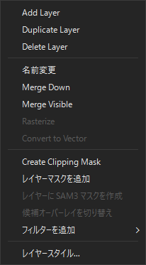
| Add Layer / Duplicate Layer / Delete Layer | Add/duplicate/delete. |
| rename | Change name. |
| Merge Down | merged into the layer below. |
| Merge Visible | Combine the displayed layers into one. |
| Rasterize | Convert vectors, text, etc. to ordinary pictures (raster). |
| Convert to Vector | Convert unconverted shapes to regular vectors. |
| Group Layers / Ungroup | Grouping/ungrouping when multiple selections are made. |
| Create / Release Clipping Mask | Display only the area drawn in the layer below (clipping). |
| Add layer mask | Added mask. After adding, it changes to an edit/delete item. |
| Create SAM3 mask on layer / Toggle candidate overlay | Create a mask from AI Select candidates (valid when there are candidates). |
| add filter | Add a filter that applies only to this layer (Levels / Hue/Saturation / Invert / Brightness / Contrast / Curves / Gradient Map / Gaussian Blur / Sharpen / Noise Reduction / Mosaic / Manga Screentone). |
| Layer style... | drop shadow etc.style Set. |
| Load as Selection / Invert Transparency | Only visible on mask layers. Load mask as selection / Invert transparent parts. |
channel
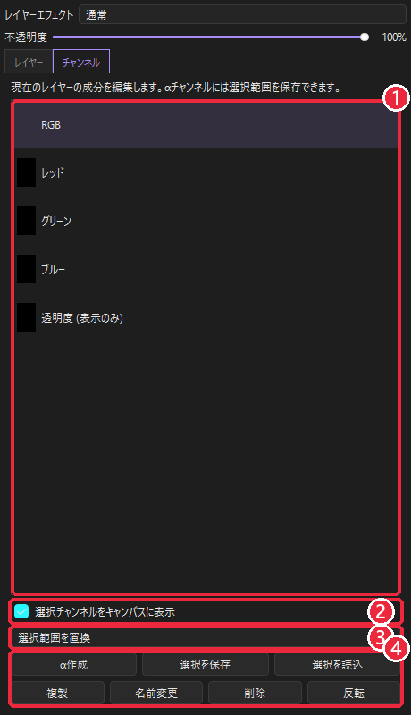
1 Treats the selected layer by color component. For RGB documents, RGB / Red / Green / Blue / Transparency (display only) is arranged, and for CMYK documents, it is arranged as C / M / Y / K. If you select a specific component and draw it, only that component will change.
| 2 Display selected channel on canvas | Displays only the selected ingredients in black and white. |
| 3 Replace/Add/Exclude/Intersection Selection | Composition method when using "Load selection". |
| 4 α creation | Create a named alpha channel (selection storage location). |
| 4 Save selection / Load selection | Save current selection to Alpha/Restore selection from Alpha. |
| 4 Duplicate/Rename/Delete/Reverse | Alpha channel management. |
All types of filter layers
Do not rewrite the original picture with "Add filter layer" or "Add filter" by right-clicking the layer.non-destructive filter can be added. Select the added filter layer,filter panel The parameters are displayed and can be adjusted or deleted at any time. The image below shows the panel and results when each filter is added above the illustration layer.
adjustment layer
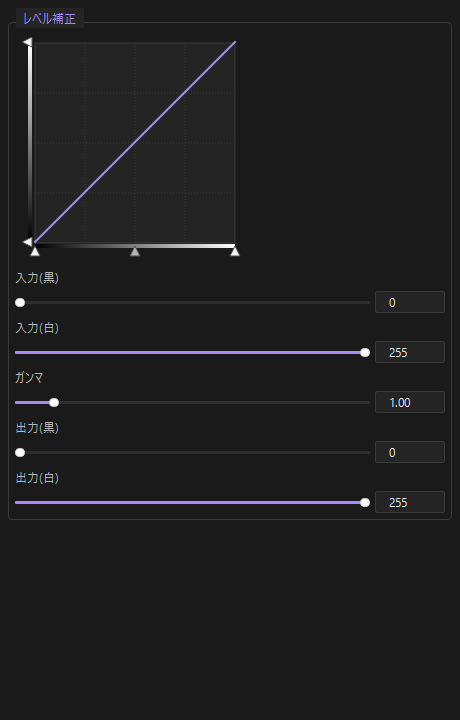
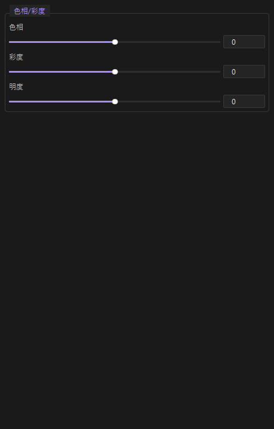
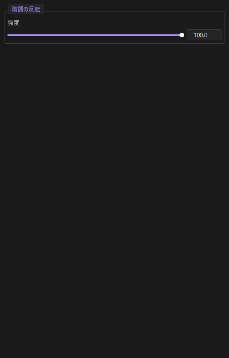
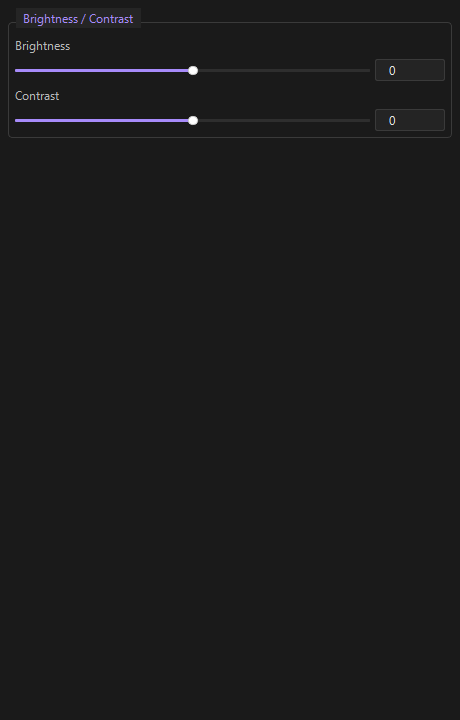
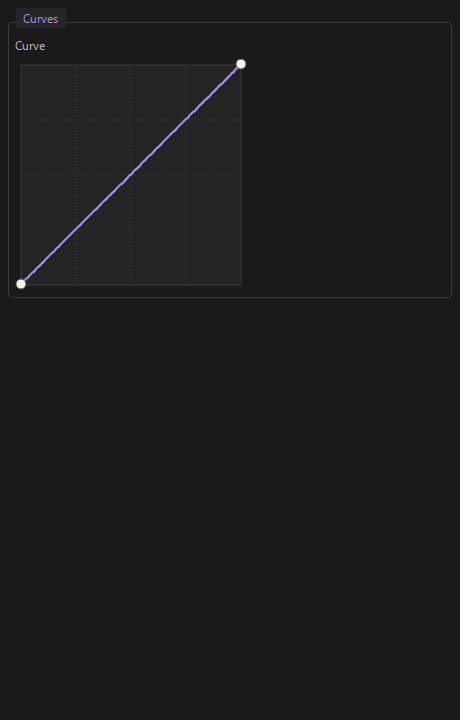
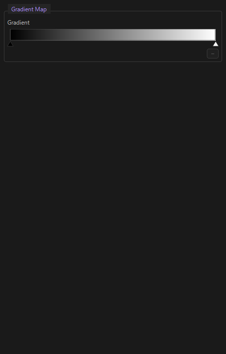
filter layer
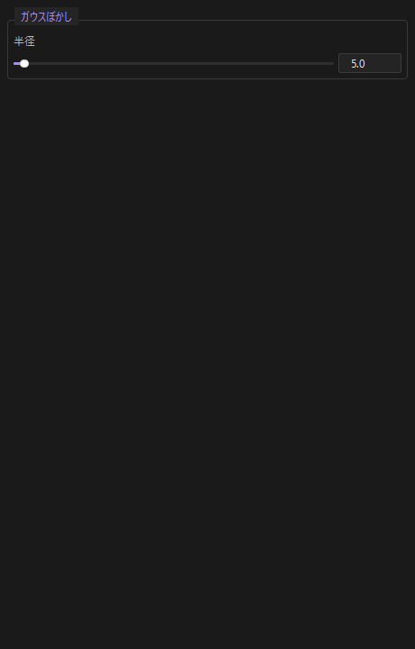
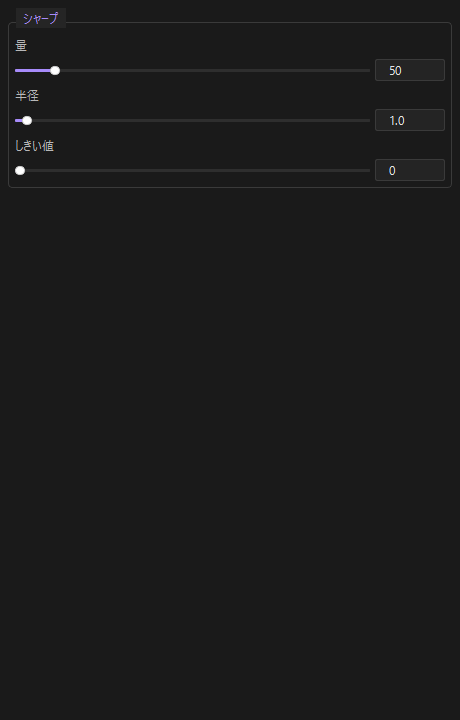
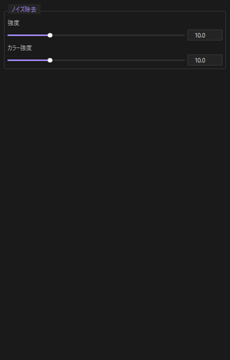
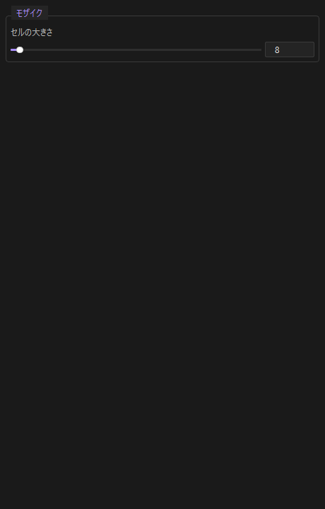
| Manga screen tone settings | |
|---|---|
| pattern | Circle / Oval / Line / Cross / Random (FM) |
| Number of lines (LPI) | Fineness of halftone dots (5 to 200). Equivalent to the "number of lines" in printing. |
| Concentration (%) | Darkness of tone (0-100). |
| angle | Orientation of the net (-180 to 180°). |
| Aspect ratio of halftone dots | How much the points are crushed (0.25 to 4). |
| origin | Net reference position: Page/Layer/Custom. |
| seed | Random (FM) random number seed. |
| preview | Accurate / Moiré suppression / Solid (simple). Change only the appearance on the screen. |
Example of application result
fill layer
From ``Add Filter Layer › Fill Layer'', you can create a layer that fills the entire surface with a single color, gradation, or pattern. "Edit Fill" opens when creating the layer, and you can change it later by right-clicking the layer (Edit Fill...).
layer style
Right-click the layer › Layer Style... to open it. You can add and remove shadows and borders later on the picture.
| type | Drop Shadow / Outer Glow / Color Overlay / Border. |
| Add / Delete / Up / Down | Stack styles and change their order. |
| Valid | Temporarily on/off. |
| Rasterize appearance | Burn the appearance, including the style, into an ordinary picture. |
| Apply / Close | Apply changes/Close. |
5. Panel details
The panel is window You can show/hide it from the menu categories (Layer Page / Drawing / Comics / AI / Others) (Canvas Assistant and Production Control, which are under development, will not appear in the menu). This section describes all the items in each panel, tab by tab.
preview
1 This is a reduced view of the entire canvas. You can check the overall balance even when working with magnification.
| 2 zoom | Preview display magnification (10-500%). |
| 3 fit | Set the magnification to fit the entire image on the panel. |
| 3 100% | Actual size display. |
color
| 1 color wheel | Use the outer ring to select hue, and the inner triangle to select saturation and brightness. |
| 2 HSV | Hue 0~359° / Saturation 0~100% / Brightness 0~100%. |
| 3 RGB | 0~255 each. |
| 4 Hex | #RRGGBB Enter directly in the format. |
| 6 pallet | Black / White / Red / Green / Blue / Cyan / Magenta / Yellow are initially registered. Click to change drawing color. |
| 5 add to palette | Register the current color to the palette. |
brush manager
brush tab
1 Switching between “Brush” and “Pen” tabs 2 Brush list 3 operation button
Select the brush tip (Inking / Marker / Round / Sketch etc.) from the list. Change the name by double-clicking.
| create a chip | Creates a brush tip from a selection on the canvas. |
| Save parameters | Saves the current pen settings to that brush. |
| Rescan ABR | Reread the ABR library folder. |
| Import ABR | Import Photoshop .abr brushes. |
| Import PNG | Imports an image as a brush tip. |
| Delete | Delete the selected brush. |
pen tab
Adjust all pen settings on the big screen. Sections can be opened or closed by clicking on their headings.
| basic | |
|---|---|
| Size / Hardness / Opacity / Flow / Stamp Density / Image Stabilization | Basic pen settings (size 0.1-1000 px, others in %). |
| line shape | |
| entry/exit editor | Drag the handle to adjust the length of entry and exit. Fine adjustment with arrow keys,Shift in 10 px increments,Home invalid,End at 2000px. |
| Entry length/extraction length | 0 to 2000 px (0 disables). |
| Smoothness of readjustment / Readjust drawn lines | Readjust the outline of the drawn line (starting from the next stroke). |
| Pen pressure | |
| Use pen pressure / Use tilt | Turn on/off reflection of pen pressure and tilt. |
| Pen pressure curve editor | The center handle is the curve, and the left handle is the lower limit. Select with left and right keys, adjust with up and down keys,Home Initial value,Esc to cancel the drag. |
| Pen pressure curve for size / Lower limit of pen pressure size | You can also specify a numerical value. |
| Changing opacity with pen pressure / Opacity pen pressure curve / Lower limit | Reflection of pen pressure on density. |
| Tone/shade | |
| Tone range/tone gamma | Tone intensity setting (0.1 to 2.0). |
| pen preset | |
| Preset name / Save new / Update / Load / Export | Save pen settings with a name, overwrite them, and input/output files. |
font
basic
| turn back | Wrap area text at the edge of the frame. |
| Font family/font style | Installed fonts and their styles (such as Regular). |
| Font size (pt) | 1〜512。 |
| Vertical writing / paragraph flow | Vertical writing switching and line sending direction (left/right). |
| arrangement | Horizontal writing: left/center/right/justified, vertical writing: top/center/bottom/justified. |
| Line spacing/character spacing | 0.5~4.0 times / -64~128. |
| Margin (top, bottom, right, left) | Inner margin of the text frame (0-256). |
| color/opacity | Font color (click to select color) and darkness. |
Japanese typesetting
The alignment of existing text remains unchanged until you enable the setting.
| preset | Traditional arrangement / Japanese typesetting standard / Custom. |
| Use Japanese typesetting / forwarding based on em | Enabling typesetting rules and tracking based on em width (em). |
| Aki of the promise | Spaces before and after punctuation marks/brackets: Depends on the characters before and after / full-width / half-width. |
| Open parenthesis at the beginning of a line / closing punctuation at the end of a line | Width of parentheses at the beginning and end of a line (half-width/full-width). |
| Japanese-European interval | Space between Japanese and alphanumeric characters (0-1 em). |
| Kinsoku processing/hanging the punctuation mark at the end of the line | Rules such as not placing punctuation marks at the beginning of a line (Japanese prohibitions/none) and punctuation marks extending beyond the end of a line. |
| Detailed settings for Kinsoku/Aki | Dialog for setting prohibited characters and spaces in detail. |
| Line adjustment/upper limit of fill/stretch amount | How to adjust the length of one line (reduce space/no space/justify space by adjusting space) and its limits. |
| Indentation at beginning of paragraph | 0〜10 em。 |
| European characters written vertically | Lying sideways / Upright. |
Ruby, tatechuyoko, emphasis point
Select the text on the canvas before using it.
| Reading/Position/Ruby arrangement | Ruby text, side (front = top/right, back = bottom/left), and alignment (center/start/end/even). |
| Character size ratio / Space with parent character / Upper limit of protrusion amount / Use ruby-specific glyphs | Ruby size, spacing, protrusion, and special glyph shapes. |
| Character width | The selected characters are evenly spaced in the specified width (em). |
| Warichu character ratio / Warichu line spacing | Warichu settings that put two small notes in one line. |
| Marked point symbol/position/size ratio/interval | Emphasis point (automatic/sesame/bullet/white circle). |
| Apply/Cancel button | Apply/cancel ruby, tatechuyoko, kenten, warichu, and jidori respectively. "Apply ruby for each character" | Separate with , and add one character at a time. |
Style/detail format/columns/concatenation
| Character style/Paragraph style | Name and register the format, and apply it to other characters (Register/Apply/Cancel format/Delete registration). |
| Horizontal ratio / Vertical ratio | Long/flat characters (0.1 to 4 times). |
| Baseline movement / Space before/after characters | The vertical position of the character and the space before and after it (em). |
| Number of columns / Column spacing / Line grid / Align column ends / Number of paragraph columns | Column settings that divide the text frame into multiple columns. |
| Connect text frames / Connect selected frames / Connect to list selection / Unconnect | Concatenation that flows the overflowing text into the next frame. |
| custom font folder | Add/delete folders/reload fonts (TTF/OTF/TTC/OTC). |
shape manager
| Shape manager tab | |
|---|---|
| top button | Import (SVG) / Add shape (register selected vector) / Delete. |
| Search / Categories / Tags | Filter registered shapes. |
| Name/Category/Tags | Edit the information of the selected shape (tags are separated by commas). |
| Alignment criteria | canvas/selection. |
| alignment button | Fit / Stretch / Center / Top / Vertical Center / Bottom / Left / Horizontal Center / Right / Horizontal Distribution / Vertical Distribution. |
| Basic shapes tab | |
| Add shapes by dragging them onto the canvas. Right-click to display transformation handles. Includes speech bubbles (spikes, circles, rounded corners, clouds, etc.), effects (Focus Lines Circle / Rect, streamlines, solid flash, sea urchin flash), basic shapes (trapezoids, parallelograms, ellipses, rounded rectangles), and polygons (triangles to decagons). | |
| concentration line | It's a cartoon-style line that tapers toward the center. Adjust with the handles that appear when you right-click: White = inner blank radius, red = number (8 to 200, initial 90), blue = outer thickness, green = inner thickness (pointed at 0), orange (diamond at the bottom) = length variation (initial 0.6), purple = vanishing point. |
| Streamline / solid flash / sea urchin flash | Drag it to the canvas to open the "Effect Line" screen. Specify the range (rectangle, circumscribed rectangle if there is a selection range) and left, top, right, and bottom. Streamlines have direction (degrees), number of lines (1 to 512, initial 32), length variation, thickness ratio, entry/exit ratio, and random number seed. Flash has center X/Y movement ratio, inner diameter/outer diameter ratio, number of lines (3 to 256, initial 64), variation, random number seed, and white outline. If you cancel, nothing will be added. |
Transform
| X / Y | Position (-99999 to 99999). |
| W / H | Width/height (vector only). |
| angle | -360〜360°。 |
The target type (raster layer, etc.) is displayed at the bottom. For raster layers, only the position can be edited.
filter
Select a filter layer in the Layers panel to display its parameters. Changes are immediately reflected on the canvas and can be undone. The items for each filter are All types of filter layers Please refer to
Reference
| Open | Load the document image (multiple images are allowed). |
| < / > | Switch the loaded images (0/0 is the number of images). |
| Remove | Removes the displayed image. |
| Opacity | The density of the document image. |
page
| 1＋ | Added page. From the menu, you can select Basic (blank page same as the current page/blank page with default layer), Comic (B5/A5/A4 body monochrome/color), "Save current page as template," "Manage templates," and "Manage masters." |
| 1 Dup / Del | Duplicate/delete pages. |
| 1 Up / Down | Move through page order. |
| 2 display | Single page/spread. |
| 3 Binding direction | Left binding/Right binding (page order will not change even if you change). |
| 4 Page list | Number, name, unsaved mark (*). double click or F2 Change name. |
gallery
The history of image generation (ComfyUI / GPT Image 2 / NanoBanana / AI Effect) is displayed as thumbnails.3 The top right is the number of cases.
| 1 state filter | All / Completed / Failed / Canceled. |
| 2 service filter | All Services / ComfyUI / GPT Image 2 / NanoBanana. |
| 4 thumbnail | You can reuse past results as layers and check generation conditions. |
| Details column | Click on an item to see a preview and generation information (service, model, full text of prompt, seed, size, duration, status, time, errors). Text can be selected and partially copied. |
| Copy/Regenerate/Restore/Delete full prompt | They are lined up in one line below the details column. Copy as is, including line breaks and spaces. Regenerate/Restore can only be pressed when that service is available (Restore also restores the GPT Image 2 model and input layer). |
| Transfer to layer: / Transfer | Send the results to a new layer or an existing layer. |
AI Effects Manager
.lsfx Manage AI effect presets in the format and place them on the canvas as AI Effect layers.
| Manager tab | |
|---|---|
| search | Search for presets by name/tag/author. |
| Display switching | Grid view / List view / Small card. |
| 📂 Import / + New | Import .lsfx / Create a new preset. |
| Category | All / Analysis / Generate / Convert (add with +). |
| Gateway | Filter by ComfyUI / NanoBanana / GPT Image 2 (change icon with ✎). |
| source | Built-in/User (Add with +). |
| Sort | Recent / Name (A-Z) / Category / Creation date. |
| ComfyUI Tab | |
| Edit the ComfyUI workflow and set the parameters and outputs to publish as a preset. | |
| Connection destination | Registered server (initial value Local — http://127.0.0.1:8188）。 |
| Open ComfyUI | Open the ComfyUI screen. |
| Load workflow... | Load the workflow JSON. |
| Reflect changes in Editor | Import the changes on the ComfyUI side to the effect editor. |
| Free up VRAM | Unload the model ComfyUI from GPU memory. |
AI Effect layer flow: Right-click the preset and add it as a layer → Assign the original layer to the input slot in the Layer panel → Adjust the parameters in the Filter panel → Generate with the Generate Row button in the Layer panel. As for the generated results, only the image and placement will be returned with a single "undo"; prompts and settings will not be undone. If there are no presets, "AI Effect presets are not installed" will be displayed, and you can open the location by clicking "Open preset folder".
continuous generation
In the AI Effect layer's filter panel, under Triggers. Wait for the previous generation to finish and generate one item at a time.
| Specify number of times / Until one cycle / Until stopped (infinite) | The number of times can be specified from 1 to 1,000,000 times (initial 10). One round calculates the number of times the candidate goes through all the options of "sequential selection" and "combination enumeration" of the live prompt (random is not included in the calculation). |
| Start/stop continuous generation | Progress is displayed as "Completed n / Total". |
| Conditions for stopping | Stop button, generation failure, change selected layer/page/document/preset/connection destination/live prompt configuration, turn off permission for external services. |
During continuous generation, automatic triggers and single generation for that layer will not be accepted. Settings are not saved with the document.
AI Effect layer of ComfyUI
When editing the node in the filter panel, the node type is displayed as "Basic widget (Qt)" (displayed in the input field of LoomStroke), "With unique UI (ComfyUI)", and "Undetermined (ComfyUI)" (edited on the ComfyUI screen). Use "Prompt Input..." to set a live prompt for the character item of the selected node and "Apply to Node". Characters directly rewritten on the ComfyUI side will take precedence. In the AI Effect layer of ComfyUI, the thumbnail of the generated image does not appear in the filter panel.
NanoBanana
| Prompt (live prompt) | Select a saved configuration (start with "(none)", ↻ update configuration, + to add parts). When you click on a part, you can select "Random," "Sequential selection," or "Combination enumeration" (prompt editor). Long parts can be wrapped around the width of the field, and the height can be changed by dragging the bottom edge of the field (height is common to all live prompts and remains even after restart). |
| Delimiter: | Part delimiter character (initial value is line feed \n）。 |
| Prompt input field | Write the content you want to generate. |
| Input layers (up to 14) | Layers for reference (none/each layer). |
| model | Gemini 2.5 Flash / Gemini 3.1 Flash / Gemini 3 Pro。 |
| thinking | Min/High. |
| modality | text+image/image. |
| size | Auto / 512 / 1K / 2K / 4K. |
| aspect ratio | 14 types (with pixel dimensions) from 1:1 (1024x1024) to 21:9 (1536x672). |
| Output layer | <new layer> / Existing layer. |
| Thought process/search | Include Thoughts / Use Google Search. |
| generation | Execute. The results will be displayed in the status column below. |
GPT Image 2
| Prompt/delimiter/input field | Same as NanoBanana. |
| Input layers (up to 16) | Specify the layers to be referenced in the order of your selection (vectors are also acceptable, each layer must be less than 50MiB). If there is no specification, a new image will be generated, and if there is, the image will be edited. |
| model | GPT Image 2 / GPT Image 2 (2026-04-21) / GPT Image 2.5 Sunburst / GPT Image 2.5 Flare and their respective (2026-09-08) versions. |
| quality | Auto/Low/Medium/High. |
| size | Auto / 1024x1024 / 1024x1536 / 1536x1024 / 1536x864 / 864x1536 / 2048x2048 / 2048x1152 / 1152x2048 / 3840x2160 / 2160x3840. |
| Format/Compression | PNG/JPEG/WebP and its compression rate (0 to 100). |
| background | Auto/Opaque. |
| moderation | Auto/Low. |
| Output layer | <new layer> / Existing layer. |
| generation | Execute. |
prompt editor
| creation | |
|---|---|
| component | Drag the string/list/text/prompt parts to the live prompt below. |
| live prompts | Assemble the prompt by arranging the parts (add with +). Click on a part to open the editing field. |
| Random / Sequential selection / Combination enumeration | How to select candidates for each part (select only one, all fixed as off). For suggestions, lists are items, strings/prompts are snippets that match the tag, and text is {a|b|c} Each candidate. Each generation advances one item, and previewing, copying, and saving do not advance it. Combination enumeration proceeds from the right part. Progress is retained only while the panel is open, and returns to the beginning when you change the configuration. Used in the live prompts of GPT Image 2, NanoBanana, and ComfyUI and the generation of the selected AI Effect. |
| Separate/Copy | Part delimiter, copy to clipboard. |
| Save (title/tag) | New/Save/Save As. |
| library | |
| Search / Tag / Type | Search for saved parts. Type: Prompt / String / List / System Prompt (LLM) / User Prompt (LLM). |
| Details | Edit title, tag, component type, and preview. |
| bottom button | Load/duplicate/delete/export/update to create tab. |
| LLM | |
| provider/model | Anthropic / Gemini / Openai and each model. |
| Temperature / Max Tokens | 0.0〜2.0 / 0〜32000。 |
| Expect Schema/JSON response | When you want the answer to be given in a fixed format. |
| stream update | Display responses sequentially. |
| System prompt/user prompt | Select from saved files or enter directly. |
| Send / Cancel / Clear | Execution control. The results are displayed in Output. |
3D Preview
| display mode | Solid / Wireframe / Textured / Normal Map。 |
| Fit / + / - | Full view/zoom in/zoom out. |
| Rotate / Turntable | Rotate / Rotate automatically. |
| Add 3D Layer | Added to canvas as 3D layer. |
| Import Projection | Capture a 3D look by projecting it onto the canvas. |
AI Select Candidates
List of candidates found for AI Select.
| Candidate List | Candidate / State / Score / Box / Actions. line Ctrl+ Click to select multiple. |
| Mode | Union / Subtraction / Intersection / Xor. |
| Combine selection candidates | Combine multiple candidates into one mask using Mode method. |
| layer grouping | Layer multiple candidates and organize them into groups. |
| Adjust the mask... | Manually adjust candidate masks (blur/expand/fill holes, no AI inference). |
| Free up SAM memory | Unload the SAM 3.1 model from memory (it will be automatically reloaded next time). |
Manga Mask Assistant
This is an auxiliary panel for creating masks such as frames, balloons, and people from manga pages (requires SAM 3.1).
| Category | Comic panel / Speech bubble / Caption box / Character / Face / Eyes / Hands / Hair / Clothes / Weapon / Prop / Background / Sound effect text / Speed lines / Screen tone region。 |
| Preset | All / Speech Bubble Protection / Character Extraction / Background Extraction / Inpaint Prep。 |
| Panel source | none/comic_panels/vector_rectangles (source of panels). |
| Build Package / Cancel Preview | Create a set of masks/cancel preview. |
| List | Scope / Panel / Category / Score / Area / Accepted / Warnings / Actions。 |
Comic
Manipulating frame borders:Basics and terminology ／ 4 divisions ／ Image/Balloon ／ Process the frame line ／ Re-allocation/arrangement ／ Tweak boundaries and content ／ Cannot press/error ／ How to view layers ／ practice
Frame layout (basic)
These are the basic operations at the top of the "Frame division" tab. Create frames on the page and decide how to divide them.
| Template/Apply template | 1-panel / 2-panel (horizontal/vertical) / 3-panel / 4-panel (tagata) / 4-panel manga / 6-panel. For pages that do not have frames yet, a frame border layer will be created immediately after applying it (you can restore it with a single "undo"). When used on a page with content, the content will be automatically distributed and reflected in a new frame. |
| Split vertically into two / horizontally into two | Divide the selected frame in half. For the frames on the frame border layer, the contents are also sorted according to "Handling of images when dividing" in "Reallocation/Arrangement" below. |
| Ratio / Split by ratio / Change ratio | Divide at a specified ratio (0.05 to 0.95) or change the existing split position. |
| Frame spacing/application | Width between frames (0-200). |
| Combine with next frame / Delete frame | Attach/erase the frames. "Delete a frame" is a deletion that leaves the contents (same as "Delete a frame and keep the contents" below). |
| Reading order (top right → bottom left) / Reading order up/down | Check and rearrange the reading order of the frames. Multiple images will also be distributed in this order. |
``Merge with next frame,'' ``Delete frame,'' ``Change ratio,'' and ``Move reading order up/down'' cannot be pressed unless a frame is selected.
Basics of the frame border layer Under exam
Things to know first
| words | meaning |
|---|---|
| area of the frame | This is the range to show the contents. The shape changes by dividing or changing boundaries. |
| frame line | It's a visual line. It is divided into top, right, bottom, and left sides, and you can erase or redraw only one side. Even if you erase the border, the frame area will remain as it is. |
| Contents of the frame | These are the images, rough speeches, and balloons that belong to that frame. In the layer panel, the "content" within the frame is organized. When dividing, the contents will also be distributed to new frames. |
| clip | This is a display that hides the outside of the frame area. The hidden pixels have not disappeared, so if you move them back, they will become visible again. |
| Convert to frame border layer | A frame created by applying a template is a frame border layer from the beginning. Select a frame in an old document, etc.Convert to frame border layer Press when it appears. Most of the additional operations cannot be pressed on the frame where this button is displayed. When dropping or merging images, the necessary frames are automatically converted. |
There are three types of "selection".Which button is selected first depends on the button.
| selection type | How to choose | Where to check | Examples of buttons to use |
|---|---|---|---|
| ① Selection of frame | Click a frame on the canvas with the Comic tool or select it from the reading order list. | "Selected: Frame N" on the panel. If not selected, "Select the frame and edit the border." | almost all buttons |
| ② Select layer panel | Click on the row in the layers panel. | Row selected in layer panel | Record as drawing destination, keep selected content within frame, allow protrusion, move to front of page, make common display of this frame independent |
| ③ Selection on canvas | Click the balloon with the Comic tool. Select the text itself on the canvas (selecting only the layer row does not select it). | Selection display on canvas | Make the selected balloon belong to this frame and make the selected text a balloon |
Differences from normal image layers:Images simply placed in the layer panel do not belong to any frame. It is not clipped and cannot be sorted even if it is split. For the image you want to put in the frame, open the image file.drop to frame Please. The dropped image enters the frame's "content" and is clipped, allowing you to use composition adjustments such as "filling the frame" and "fitting the entire image." Composition adjustment applies only to images placed with drop.
There is no confirm button.Operations such as splitting, changing boundaries, and editing will be reflected as soon as you press the button (or when you release the drag button). For large pages, it takes time to prepare, and during that time the message "Processing panel changes..." is displayed and all buttons cannot be pressed. If you don't like the results undo（Ctrl+Z) to return it. If you are in drag Esc to cancel the drag.
Button that appears when you select a frame
| Function | when to use | What to choose first | operation | result | How to return |
|---|---|---|---|---|---|
| Convert to frame border layer | When this button appears on the selected frame | ① Top | press | The frame becomes a frame border layer with content and borders, and additional operations can be used. | undo |
| draw here | When you want to draw a picture on that frame | ① Top | Press and then draw with a pen etc. | For empty frames, a rough drawing destination will be provided in the ``content'' of that frame. A layer is created when you draw your first line. For frames with content, return to the recorded drawing destination. Pen and brush settings remain unchanged. | If it is an empty frame, the creation of the first line and rough layer will be returned with one undo |
| draw a new rough sketch | When you want to keep the existing drawing and draw another rough sketch | ① Top | Press and then draw | A new drawing destination will be prepared for the "content" of that frame. | The empty layer will not increase before drawing the line. |
The drawing destination record is information only used during work. If the message "Please specify the drawing destination for this frame once" appears after restarting, etc., please click the button below.Record as drawing destination Specify again. If the message "Please complete your drawing or text input." appears, press the button after you finish drawing the line or entering text.
Role of the four categories
| classification | what to do | Mainly what you choose first | Typical buttons |
|---|---|---|---|
| Image/Balloon | Insert images, balloons, and rough sketches into frames. Change the way the content is displayed (inside the frame/extending the page/on top of the page). | ① Frame + ② Layer or ③ Balloon/Text | Record as drawing destination, make selected balloon belong to this frame, allow selected content to protrude |
| Process the frame line | Draw or erase only one side of the frame line as pixels, or erase part of it as a vector. | ① Piece + side to be processed | Pixelate this side, process this side, partially erase the vector border |
| Re-allocation/arrangement | After entering the content, divide, tilt, replace, or delete the frames. | ① Top | Split frames, change boundary slope, swap frame positions |
| Tweak boundaries and content | Correct the composition of the image that has been broken due to redistribution, or the frame lines that no longer match the length. Change the frame spacing. | Select content/side from the list (targets the entire page) | Fill in the frames, adjust on the canvas, draw around here |
Image/Balloon
| Function | when to use | What to choose first | operation | result | How to return |
|---|---|---|---|---|---|
| How to store images | Before dropping the image | None | Select “Fill frame” or “Fit entire image” | It will be used for the next image to be dropped.fill in the frames covers the frame while maintaining the aspect ratio, and clips the protruding parts.Fit the entire image The entire image is visible, with some margins depending on the aspect ratio. Images already placed will not change. | reselect |
| Where to place multiple images | Before dropping multiple images at once | None | Select "Place all on this panel" or "Distribute to each panel in reading order" | When distributing, one piece will be placed in the order of reading from the dropped frame. | reselect |
| Dropping image files | When you want to insert an image into a frame | None (targets the drop destination piece) | Drop the image file from Explorer etc. onto the frame | The image enters the "content" of the frame, and the outside of the frame is clipped. The pixels of the original image are retained. The frames before conversion will be automatically converted. If there are not enough pieces to be distributed, an error (displayed in English) will occur and none will be placed. | Undo (1 drop) |
| Record as drawing destination | When you want to use an existing drawing layer as the return destination for "Draw here" | ① Frame + ② Drawing layer inside that frame | press | After that, use "Draw here" to return to that layer. | Re-record another layer |
| Assign the selected balloon to this frame | When you want to use the balloon you created as the content of a frame | ① Frame + ③ Balloon with Comic tool | Make sure that “Selected: Frame N” is the desired frame and press it. | The body, text, and tail of the balloon form the content of that frame. | undo |
| Make selected characters into balloons | When you want to surround entered characters with a balloon | ① Frame + ③ Characters on canvas | press | A balloon surrounding the character is created and belongs to that frame. If text is hidden or locked, is in the middle of transformation or filter editing, or has a blending mode or opacity, the reason will be displayed and the text will stop. Please select all connected letters. | undo |
| Fit selected content into frame | When restoring content that extends beyond the page or brought it to the front of the page | ① Panel + ② Line with its content (a whole set of balloons) | press | Returns to display clipped in the frame area | undo |
| Allow selected content to overflow | When you want to move hands, sound effects, etc. outside the frame | Same as above | press | The content will be displayed outside the frame. The stacking order remains the same as that frame, and the belonging frames do not change. | Undo or “frame” |
| Bring selected content to the front of the page | When you want to stack a frame before the next frame | Same as above | press | Displayed before all frames. The piece you belong to does not change. | Undo or “frame” |
| Make this frame's common display independent | When you want to edit an image that has been divided using "Common display using page coordinates" separately for this frame only. | ① Frame + ② Common display line | press | This frame becomes an independent copy, and editing will not affect other frames. | undo |
If you get an error in English when switching content display, the main meanings are as follows: "select a whole content unit in this panel" = you have not selected the entire content of this panel, "content or owning panel is hidden or locked" = the content or panel is hidden or locked, "content already uses this display policy" = it is already in that display, "select a shared source first" = you have not selected the common display line.
Process the frame line
Select the edge in "Edge to process" and then operate. The list is "Top side", "Right side", "Bottom side", and "Left side". For tilted frames, numbers will be displayed as ``page outer edge'' and ``dividing boundary edge.'' Nothing changes other than the selected side.
| Function | when to use | What to choose first | operation | result | How to return |
|---|---|---|---|---|---|
| Pixelate this area | When you want to add border lines with a brush or create a hand-drawn style | ① Piece + side to be processed | press | Only that side becomes pixels (in the layers panel P). The other sides are vectors (V) remains. | Undo or "return this area to vector" |
| Process this area | When adding to or erasing a pixelated edge | ① Frame + pixelated edges | Press and then draw with a pen or eraser | The layer around that area will be the drawing destination. An error will occur for vector edges or locked edges. | Undo each stroke |
| Return this area to vector | When you want to return pixelated edges to vector lines | ① Frame + pixelated edges | press | The saved vector line will return to match the current frame shape. Additions and deletions are removed from display, but the processed pixels remain in the frame as a hidden/locked layer (they are not automatically converted by tracing lines). | undo |
| Vector edit this area | When you want to modify the shape of the sides of a vector using control points | ① Frame + vector side | press | Switches to the path editing tool and selects the closest control points. After editing, you will automatically return to the Comic tool. | undo |
| Partial erasure width of frame line | Before partial vector deletion | None | Specify from 1 to 1000 px (initial value 12) | This is the width of the next partial erase | change the value |
| Partially erase a vector border | When you want to remove part of the line from a vector (such as on a balloon or a person) | ① Frame + vector side | Press and then drag the part of the canvas you want to erase with the Comic tool | It will be reflected when you release it. Each press is one drag. If you want to erase it again, press it again. | undo |
Even if you erase all the borders, the frame area and image clip will remain, allowing you to continue ``drawing here'' and arranging content. For sides whose lengths no longer match due to resizing,Tweak boundaries and content I'll fix it.
Re-allocation/arrangement
You can rearrange the frames even after adding content. In splitting, each content is New frame with the greatest overlap Allocate to. Items with the same overlap, items that are entirely outside the frame, and items whose range cannot be determined remain on the original frame side. There is no list to manually change the distribution. If the result is different, please undo or move the contents using the layer panel.
| Handling images when splitting | result |
|---|---|
| move | Move the contents to the destination frame. The original image and its position on the page are maintained and displayed in the new frame range. |
| independent copy | Create an independent copy of the newly created frame. If you edit one later, the other will not change. |
| Common display using page coordinates | Display one source data in multiple frames. Edits will be reflected on all frames. When you want to fix only one side Make this frame's common display independent use. Compositions and structures that do not correspond to the common display will display the reason and stop. |
| Function | when to use | What to choose first | operation | result | How to return |
|---|---|---|---|---|---|
| Split the frame | When you want to divide a frame with content into two parts | ① Frame + Handling of images when dividing | press | Divide into halves in the same direction as "split into two vertically" and distribute and reflect the contents. | Undo (1 time) |
| Split and duplicate the contents of a frame | When you want to put the same picture in both frames | ① Top | press | Splits all content as independent copies regardless of treatment settings | undo |
| Boundary Slope / Change Boundary Slope | When you want to make the dividing line of the selected frame diagonal | ① Top | Enter the slope (-0.9 to 0.9) and press Enter | The border will be tilted to reflect the content and border to accommodate the new shape. | undo |
| Change the overall tilt | When you want all dividing lines on a page to have the same slope | None (2 or more frames per page) | Tilt and press | The entire page border is tilted | undo |
| Frames to swap positions / Swap the positions of frames | When you want to swap the locations of two frames | ① Piece + opponent's piece | Select a partner and press | Swap the contents and borders. Only rectangular pieces are eligible. The list of opponents is displayed using internal identification names, so if you are having trouble figuring out which frame it is, check the screen after the exchange, and if it is different, return it to the original one. | undo |
| Delete the frame and keep the content | When you want to stop using frames but keep the pictures | ① Top | press | The frames will disappear and the content will remain as normal layers/groups on the page. Clips and processed masks will also remain. | undo |
| Delete the frame and the contents it belongs to | When you don't need the frame or the contents | ① Top | press | Delete the frames and their belonging contents all at once. | undo |
A join corresponds to adjacent pieces in a rectangle. Unsupported combinations, such as combining tilted frames or redividing combined tilted frames, will display the reason and stop before being changed.
Tweak boundaries and content
This list of categories is not a layer panel selection.entire current page It is made from. Each button will be reflected immediately when you press it.
| Function | when to use | What to choose first | operation | result | How to return |
|---|---|---|---|---|---|
| Frame interval / change frame interval | When you want to change the gap between frames | None | Enter 0-1000 px and press Enter | The gap will change and the content and border will be reflected together. It cannot be pressed while adjusting the composition (filling frames, moving to the center, adjusting on the canvas). | undo |
| Contents to be revised | When searching for corrupted content | None | Select from list | Sort by "Name: Status". The status is ``The whole image is outside the frame'', ``Part of it is outside the frame'', ``The image does not cover the frame'', ``Margins of the entire display'', ``Within the display range'', ``Hidden'', and ``The range cannot be determined.'' | — |
| Fill frame/Fit entire image | When you want to automatically recompose the image | Contents to be revised (image placed by drop) | press | Reposition it so that it covers the frame, or so that you can see it all. Images placed using methods other than drop will result in an error (displayed in English). | undo |
| Move to the center of the frame | When you want to place the content in the center of the frame | Contents to be revised | press | The content moves to the center of the frame. | undo |
| Adjust on canvas | When you want to manually adjust the position or size | Contents to be revised | Turn it on and drag it on the canvas | Drag within the content to move, and drag the bottom right corner to scale (images placed by dropping only). When you release it, it will be reflected and the adjustment will continue. Press it again to end. You can also start by double-clicking on a placed image in the Comic tool. | While dragging Esc, then put it back after releasing it |
| Clip target / Keep processed clip / Regenerate clip | When changing the border of a clip using frames that you have edited yourself | Clip target | press either | retention will leave the processed clip and stop automatic updates.regeneration will be rebuilt from the area of the frame (machining will be lost). | undo |
| Area to be reworked | When the length of the frame line does not match after resizing | None | Select from list | The pixelated edges are arranged as ``Lack of lines n px'', ``Excess lines n px'', and ``Lengths match''. | — |
| Keep original pixels / Stretch along edges | When fixing sides that don't match in length | Area to be reworked | press either | keep original pixels will leave the processed line as it is (the length will not be adjusted automatically. If necessary, use "Draw around here" to add the missing part).Stretch along the edges Stretch the lines to match the length. | undo |
| draw around here | When you add the missing parts by yourself | Area to be reworked | Press and then draw with a pen | The layer around that area will be the drawing destination. | Undo each stroke |
You cannot press the button if the list is empty: if there are no frames that you have edited in the clip, the two clip frames will be gray, if the frames have no content, the four composition frames will be gray, and if there are no pixelated edges, the three edge frames will be gray.
When a button cannot be pressed or an error occurs
``It's gray and I can't press it.'' and ``I can press it, but the panel doesn't work.''Unable to perform piece operation: Reason” may appear. The former is a condition where the premise is insufficient, and the latter is a condition where the conditions when pressed are not met.
| symptoms | Necessary assumptions | Where to check | Coping |
|---|---|---|---|
| Gray: All buttons | processing has been completed | "Processing frame changes..." on the panel | wait until the display disappears |
| Gray: Most of the additional operations | The selected frame must be a frame border layer | Is the "Convert to frame border layer" button not displayed? | Choose a frame,Convert to frame border layer press |
| Gray: Combine, delete, change ratio, reading order | Selecting a frame | "Selected: Frame N" | Click on a frame with the Comic tool or select it from the reading order list |
| Gray: Draw here/Draw a new rough sketch | Not while adjusting the composition on the canvas | "Release to confirm. Press Esc to cancel drag." and "Cancel" on the panel. | After finishing the adjustment Cancellation Press (the reflected adjustments will remain) |
| Gray: change the overall tilt | Must have 2 or more pages | Reading order list | split first |
| Gray: Swap the position of the pieces | Choose a piece and make sure your opponent has a piece | "Pieces that exchange positions" | Select frames/Make 2 or more frames |
| Gray: Each button to be reworked | Target list is not empty | "Contents to be modified" "Clip target" "Area to be modified" | Insert content, pixelate edges, etc. No need to use if there is no target |
| Gray: Change frame interval (rework) | The composition is not being adjusted. | Panel “Cancel” | After adjusting the composition Cancellation press |
| Error: Please confirm or cancel the preview before proceeding. | The image is not being processed or the composition is being adjusted (the wording is still the old display, but there is no confirm button) | "Processing frame changes..." and "Cancel" on the panel | Either wait for the process to finish or finish adjusting the composition.Cancellation |
| Error: Please complete your drawing or text input. | Line and character input has been completed. | canvas | Confirm the input and then press |
| Error: Please specify the drawing destination for this frame once. | The drawing layer for that frame is selected in the layer panel. | layer panel | Select the drawing layer within the frame,Record as drawing destination |
| Error: Please select a character. | Selecting the text itself on the canvas | canvas | Select text on the canvas instead of the layer row |
| Error: Frame or parent layer is locked or mask is being edited | The frame or parent group must not be locked. | Layer panel key/mask editing | Unlock and finish mask editing |
| Error: Please confirm the transformation of the frame | The transformation of the top is completed. | canvas | Confirm the transformation |
| Error: English sentence appears | (Error without Japanese translation) | Panel display | See explanations in each section above. Example: “not enough panels…” means there are not enough frames at the distribution destination, “choose an imported image…” is not the image placed by drop |
Contents and borders seen in the layer panel
| display | meaning |
|---|---|
| Frame 1, Frame 2... | A collection of frames. Display/lock is also handled in this unit. |
| Content | Things to display within the frame, such as images, rough sketches, and balloons. For balloons, transfer the main body and text as a set. |
| frame line | Top edge, right edge, bottom edge, left edge, or page perimeter/division boundary.V is a vector,P is a pixel. |
| Extrusion/front of page | Contents that are outside the frame. In the reference line on the front of the page or in the common display Go to original data Edit the entity from . It is not used to drag and copy the reference row itself. |
Backups for restoration and internal data of frames do not appear in the normal list. Image affiliation and clips are controlled from the content side, and line processing is controlled from the frame line side. Preserve editing information when saving .lstroke Please use
Exercise: 4 steps
Exercise 1: Create the first page
- create a new file,Window › Comics › Comic , and open the "Frame division" tab.
- Select "3 frames" etc. as a template,Apply template Press “Frame 1” will be created in the layer panel.
- Set the tool to Comic and click on the first frame. Confirm that "Selected: Frame 1" appears on the panel.
- draw here Press and draw a rough sketch with a pen. The protruding part will be hidden outside the frame.
- When you want to redraw undo. When you want to overlap another rough draw a new rough sketch Press
Exercise 2: Drop multiple images
- On the exercise 1 page,Image/Balloon Open.
- "How to store images"fill in the frames, "Place multiple images"Distributed to each panel in reading order I'll make it.
- Select 3 images in Explorer and combine them Frame 1 Drop it onto the . Insert one sheet at a time in reading order starting from frame 1.
- If you want to reposition the image, double-click the image with the Comic tool, or Tweak boundaries and content Select the content with Adjust on canvas Turn on and drag.
- If you get an error that there are not enough frames, reduce the number of images or set the drop destination to the previous frame. Nothing is left behind, so you can start over.
Exercise 3: Insert a picture and then divide it
- Select the frame containing the image.
- Re-allocation/arrangement, and select "Handling images when splitting". If you get lost move I'll make it.
- Split the frame Press It will be reflected when "Processing frame changes..." disappears.
- If the image only appears in one frame or is hidden,Tweak boundaries and content Under "Contents to be modified", select "The whole thing is outside the frame", etc.fill in the frames Ya Adjust on canvas I'll fix it.
- If you don't like the whole thing undo Return to the state before division, change the handling, and re-divide.
Exercise 4: Edit part of the border
- Choose a frame,Process the frame line Open and select the edge in "Edge to process".
- When extracting a part as a vector:Partially erase a vector border Press and drag the part you want to erase with the Comic tool. To erase more, press the button again.
- When adding:Pixelate this area after pressing Process this area Press and draw with a pen or eraser.
- If you change the size of the frame later and the lengths of the lines no longer match,Tweak boundaries and content Select the "side to be reworked",Stretch along the edges Or draw around here I'll fix it.
- When you want to quit Return this area to vector Press
Balloon
| Selected balloon | The balloon selected on the canvas will be the target. |
| Create a balloon | Select ellipse / rounded rectangle / cloud shape (thinking) / jagged shape (scream) and "create a balloon". |
| Converting the Body/Tail layer into a balloon | Create a balloon from separate layers with the body and tail drawn separately. |
| Convert hand-drawn balloons | Convert hand-drawn balloons (selections or layers) into editable balloons. |
| Serif / Vertical writing / Auto size adjustment to fit text / Reflect dialogue | Input and reflect the characters inside. |
| Set speaker | Add the speaker name (display name) and speaker ID. |
| Open the balloon at the base of the tail | On: Cut out the outline at the base of the tail, and when the tail moves, the opening will follow. |
| Make the base follow the tip | On: When you move the tip, the base moves along the outer circumference of the balloon. |
| Automatically connect the tail and balloon lines | Connect the ends of the lines smoothly. |
| tail distance | Distance between the base and the outer periphery (0 means close contact, negative means bite). |
| Register the selected balloon to the material panel / Delete the balloon | Comic Assets Save/Delete. |
| character format | Font/size/character direction/line spacing/character spacing/format details. |
List of lines
List of pages, panels, speakers, lines, and status. Double-click the dialogue field to edit it on the spot (Enter line break,Ctrl+Enter Confirmed,Esc (cancellation). Editing the text field does not move you to another page. Change the speaker format in the speaker column, and move to the relevant location in the page/balloon column. "Update list" and "Batch edit selected lines".
speaker format
Register the text format (font, color, etc.) for each speaker and automatically apply it to the dialogue. Set the format name, speaker ID, speaker name, color tag (select color/cancel tag), and "default format used for unregistered speakers", and import the format of the selected text adjusted in the font panel with "Register/Update selected text format". Others: Update format registration information / Duplicate / Delete / Apply to selected balloons / Cancel format overwriting / Save and load user defaults.
Comic Assets
| Balloon tab | List of registered balloon materials. |
| Register the selected balloon | Save the balloon selected in the Comic panel as a material. |
| Rename/Delete/Reload | Material management. |
comic project
| Project / New... / Import... / Export... | Selection, creation, input/output of script projects. |
| Chapter/Page (Left) | Chapter and page organization tree. |
| List of lines (center) | # / Speaker / Dialogue / Page / Proofreading / Placement. Search for lines in the column above. |
| Speaker / Dialogue / Proofreading / Direction / Page | Edit the selected lines. Proofreading: Draft / Needs proofreading / Approved, Direction: Vertical / Horizontal. Confirmed with "Reflected in dialogue". |
| Add chapter / Add page / Add dialogue / Delete dialogue | Edit configuration. |
| Create link/text on current page | Connect the dialogue to the current page and place it as text on the canvas. |
| Next not placed/Next calibration required | Jump to the lines that you have left to work on. |
| inspect link | Check that there are no problems with the correspondence between the dialogue and the page. |
comic workflow
| Plan/Verify Project/Book | Plan the entire structure of a book from a comic project and examine problems. |
| List | Page/frame/state/dialogue. |
| Plan Page / Preview Apply / Apply to Page | Plan the panel layout and dialogue placement for the selected page, check it, and then apply it. |
Drawing assistance
| Type/Add/Delete | Add/delete mirror/rotational symmetry/parallel ruler/radial ruler/concentric circle ruler/perspective ruler. |
| activate | Use the selected aid for drawing. |
| Enable/Overlay display | Turn on/off assistance and display guide lines. |
| Apply/Update | Reflect settings/update list. At the bottom, there is "N assistance for this page". |
action
| Action list | Operations that can be performed (exporting pages as images, adding/deleting/duplicating layers, etc.). |
| Take action.../Record | Execute the selected operation/Record the operation and make it a macro. |
| macro | List of recorded macros. |
| Play / Batch Run... / Dry Run | Execute macro / Batch execution on multiple pages or files / Try without making any changes. |
| Delete / Import... / Export... | Macro management. The execution log will appear in the field below. |
link
This is management of images placed as external files using "Place Images". List: Status / Name / Type / Layer used / Update date / Hash.
| Update/Verify hash | Update the list/Check if the files have changed. |
| open location | Open the folder containing the file. |
| Relink... / Reload / Replace... | Respecify/reread the moved file/replace it with another file. |
| embed | Stop external references and incorporate them into the file. |
| Go to layer | Select the layer you are using. |
Canvas Assistant Under development
This is a feature (currently under development) where you can write down the edits you want to make and the AI will plan the steps and apply them to the canvas. It does not currently appear in the window menu.
| Refresh | Reread the state of the canvas. |
| Input field / Plan | Write the contents in "Describe the canvas edit..." and create a plan. |
| Context | Page / Layer / Selection / Visible / External (external services allowed). |
| Plan | Status / Intent / Target / Approval / Run。 |
| Next | Preview / Apply / Discard / Undo / Verify。 |
Production Control Under development
This is a panel under development that manages production jobs, materials, and recipes via MCP. It does not currently appear in the window menu. LoomStroke If the MCP server is not running, "Refresh failed" will be displayed. Tabs: Overview (number of Features / AI Effect presets / Artifacts / Jobs / Bible entries / Visual QA reports / Export profiles / Recipes / Production recipes / Store root / External services), Catalog, Artifacts, Jobs, Bible, Visual QA, Export, Recipes, Lineage.
7. Dialogue
Image/Canvas
| image resolution | |
|---|---|
| 1 pixel dimensions | Width/height (px), magnification (%). |
| 2 Actual size | Specify width and height in mm/inch. |
| 3 resolution | DPI（1〜1200）。 |
| 4 Fix aspect ratio / Resample image | When resampling is turned off, only the actual size (DPI) is changed without changing the pixels. |
| 4 Interpolation method | Nearest Neighbor / Bilinear / Bicubic (recommended) / Lanczos (best for reduction) / Hamming / Box (integer reduction). |
| 4 Estimating memory for cancellation | Amount of memory to use to make this change reversible. |
| Manga work settings | |
|---|---|
| Binding direction | Left binding/right binding (the order remains the same). |
| Start of main text | Automatic / Front (recto) / Back (verso). Insert up to one blank page to align the sides. |
| Page display | Single page/spread. |
| Number starting number / prefix | The starting value of the page number (1-9999) and the prefix character. |
| Role of not displaying number page | Select from cover / back cover / door / body / colophon. |
| Spread preview | You can check the combination of pages. |
Start writing
| 1 format | PNG/JPEG/TIFF/WebP/BMP/PSD (with layers)/SVG (vector). Transparency, ICC, and DPI compatibility will be displayed for each format. |
| 2 color profile | Embed a document profile / No profile / Convert to sRGB and embed. |
| 3 transparency | Preserve transparency/Fill with color and merge (specify color). |
| 4 Format options | PNG compression level (0-9), JPEG quality, etc. |
| 5 Export content | Active page display layer composition result. Guides, selection borders, and tool displays are not included. |
| 6 warning | Displayed if there are any points to note. |
| Batch export pages | |
|---|---|
| Target/Scope/Role | All/page range (e.g. 1-4, 7) / Current / Odd / Even / Select by role (cover, door, main text, etc.). |
| Format/Output destination/File name | PNG/JPEG/TIFF/WebP, storage folder, naming convention ({document_name}_{index}, number of digits in the sequential number). |
| existing file | Confirm / Replace / Skip / Save with sequential number before overwriting. |
| Export export-report.json | Leave a record of the export results. |
| export for printing | |
| output | Standard PDF / PDF/X-1a / PDF/X-4 / CMYK TIFF sequential number / Grayscale K TIFF sequential number. |
| draw a dragonfly | Mark the cutting position (initial on). |
| Print mark (for standard PDF) | Type: Japanese style square dragonfly (conventional) / Japanese style double dragonfly / Overseas style cutting mark. Cutting mark (initial on)/Additional mark/Register mark/Center mark. Line width 0.01 to 5pt (initial 0.25), distance from outside of fill 0 to 144pt (initial 3), mark color: conventional black (RGB) / K only (100%) / registration (CMYK each 100%). |
| Margin information (for standard PDF) | Insert file name/page number/date/time/color mode/color bar/gray bar in the margins (all are initially off). |
| preview | Confirm finished dimensions and additional paint. If there is no size guide, the entire canvas will be treated as a finished product (no additional fills). |
| Export webtoon | |
|---|---|
| segment | Select and preview pages to export. |
| Output width / Maximum slice height / Margin between pages | Width (64-16384 px), maximum single page height, and page gap. Please check the latest terms and conditions of each site before posting. |
| Format / File name / Existing file / Manifest | PNG/JPEG/WebP, naming conventions, overwriting methods, webtoon_manifest.json output. |
| digital manga package | |
| format | CBZ / Fixed Layout EPUB 3 / Image Package + Manifest. |
| Image/binding direction | PNG/JPEG/WebP, right binding (right to left)/left binding. |
| Bibliographic information | Title/Language/Identifier (required, automatically generated by "Generate")/Author/Series/Volume/Description. |
| page/cover | Specify recording pages and cover. |
Check/Convert
| Mode list | Support status of bit, channel, save, brush, and export for rgba8 / gray8 / mono1 / rgba16 / cmyk8 / cmyk16. |
| Destination / Preserve Alpha | When you select the destination mode, the estimated result (memory/warning) will be displayed below. |
| Plate C/M/Y/K・Estimate ink coverage | Check the total ink amount of CMYK. |
| Convert document to CMYK | Select ICC profile and bit depth (8 / 16) to convert all pages to editable CMYK. |
8. Preferences
Edit › Preferences（Ctrl+,) to open it. Switch pages using the list on the left,OK(Save and close)/Cancel(discard changes)/Applicable(Save without closing) to confirm. The initial values in the table below are the status immediately after installation.
performance
| Item | Range/choices | Initial value | Description |
|---|---|---|---|
| Enable Numba optimization | on/off | on | We use a mechanism (Numba) that speeds up numerical calculations. Normally remains on. |
| cache size | 10~10000 items | 100 items | Number of items to remember drawing results, etc. Increasing it may speed things up, but it uses more memory. |
| Undo times | 10〜1000 | 50 | Ctrl+Z The maximum number of moves that can be returned. The more you increase it, the more memory it uses. |
| memory map threshold | 1〜1000 MB | 10 MB | Image data larger than this is handled via disk (memory map) to reduce memory usage. |
| Recombination FPS upper limit | 10〜120 fps | 60 fps | Upper limit on the number of times the screen can be redrawn. Lowering it will reduce the CPU load on large canvases. |
| Display vectors clearly when zoomed in | on/off | on | When zoomed in, vectors and text appear clearly at the screen resolution, regardless of layer order. |
| Image quality of the other page in the double-page spread | Full / Balanced / Low | full | Display resolution of the other page that appears next to you in two-page spread view. Lowering it will save GPU memory (the page being edited is always full). |
| [ ] key brush size acceleration | Off / Weak / Standard / Strong (4-level slider) | standard | [ / ] How to speed up when you hold down or press repeatedly. When off, it changes by the same percentage (approximately 10%) each time. The mouse wheel on the size slider also changes in the same increments. Eraser key operations are not applicable. |
interface
| Item | Range/choices | Initial value | Description |
|---|---|---|---|
| language | System default / English / Japanese / Japanese / 简体中文 / Chinese (Simplified) / Traditional Chinese / Chinese (Traditional) / Taiwan Mandarin / 한국어 / Korean / Español / Spanish / العربية / Arabic / हिन्दी / Hindi / Português (Brasil) / Portuguese (Brazil) / বাংলা / Bengali / Русский / Russian | system default | Display language of the screen. The system default is to check the display languages of Windows in order of preference and use the first supported language (if not, use English). If you specify a language, that specification will take precedence. |
| color theme | Dark / Light / System | dark | Screen color scheme. |
| Show toolbar | on/off | on | Show left toolbar. |
| Show status bar | on/off | on | Status display at the bottom of the window. |
| grid spacing | 1〜5000 px | 32 px | G The spacing of the grid to display. |
| Remember the magnification and display position for each page | on/off | off | Each page retains its last viewed magnification and position. When off, one display state is used for the entire work. |
| Allow external AI services (ComfyUI, LLM Gateway, NanoBanana) | on/off | off | While off, communication to ComfyUI, LLM Gateway, NanoBanana, etc. is blocked. Turn on to use AI generation. |
| Menu: Display menu / Layer menu / Filter menu | on/off | on | Whether to display each menu in the menu bar. |
| Menu: Tools menu / Plugins menu | on/off | off | Whether to display each menu in the menu bar. |
| Mask overlay color (select color...) | color | Cyan (#00FFFF) | The color to overlay when editing a mask or displaying a selection. |
| Mask overlay opacity | 0〜255 | 128 | The depth of the layered colors. |
File I/O
| Item | Range/choices | Initial value | Description |
|---|---|---|---|
| Enable autosave (enables after reboot) | on/off | on | Auto-save your work at regular intervals and after a crash or force quit restoration I will make it possible. If it is turned off, it cannot be restored. |
| Autosave interval (enabled after reboot) | 30~3600 seconds | 300 seconds | Autosave interval. |
| compression quality | 1〜100 | 95 | Compression quality when saving and exporting. The higher the value, the better the image quality and the larger the file. |
| Layout directory (see...) | folder | user_data folder of LoomStroke | Save destination for panel arrangement (layout). |
LoomStroke MCP
This is a setting for an MCP server that runs only within this computer (127.0.0.1) in order to operate the LoomStroke from an external AI agent (such as Claude).
| Item | Range/choices | Initial value | Description |
|---|---|---|---|
| Enable local LoomStroke MCP server | on/off | off | Enable MCP server (listening only on 127.0.0.1). |
| Start on launch | on/off | off | LoomStroke Automatically start the server at boot time. |
| Port | 0〜65535 | 37645 | Listening port number. If set to 0, an empty number will be used automatically. |
| Endpoint URL（Copy） | Display only | Not running | The destination URL to set for the agent. Not running while stopped. |
| Session Token（Copy / Refresh） | Display only | automatic generation | Authentication token required for connection. Recreate it with Refresh.Please do not tell others. |
| Refresh (state) | button | — | Updates and displays the operational status of the server. |
| Allowed Origins | Comma separated URLs | (Empty) = http://127.0.0.1:PORT, http://localhost:PORT | Connection sources that can call the server. |
| File Roots（Browse…） | semicolon delimited folders | (empty) = user folder | A folder that allows MCP to write files. |
| Approving agent operations | Allow all MCP agent operations / Confirm only before executing external generation / Confirm every time MCP agent operation | Check every time MCP agent is operated | When to display a confirmation dialog before executing an agent operation. |
| Skip additional confirmation dialogs | on/off | off | Valid only when "Allow all". Folder restrictions, external service permissions, and connection authentication still apply. |
SAM 3.1
| Item | Range/choices | Initial value | Description |
|---|---|---|---|
| SAM 3.1 root folder (see...) | folder | (empty) | AI Select The location where SAM 3.1 used by is installed. |
| SAM 3.1 Automatically start the server | on/off | off | Starts the SAM 3.1 server when LoomStroke starts. |
| condition | Display only | — | Runtime (setup state), checkpoint (model file), worker (server), model (loading state). |
| Setup/Cancel | button | — | Prepare the execution environment for SAM 3.1/Cancel the preparation. |
| Start/Stop/Restart | button | — | SAM 3.1 Server operations. |
| Load model / Unload model | button | — | Load/unload models into GPU memory. |
| Log field | Display only | — | Displays the progress of setup and startup. |
| Asset cache limit | 64〜262144 MB | 2048 MB | Upper limit for storing analysis results (masks, etc.). |
shortcut
| Item | Range/choices | Initial value | Description |
|---|---|---|---|
| left tree | Category/Owner | all shortcuts | Narrow down the displayed range by category (files, editing, tools, etc.) and owner (LoomStroke core, tools). |
| Filter (Search Actions…/Clear) | string | (empty) | Search by action name. |
| Assigned only | on/off | off | Show only actions to which keys are assigned. |
| competition only | on/off | off | Display only those where the same key is assigned multiple times. |
| reset filter | button | — | Clear filter. The number of items will be displayed at the bottom as ``Displaying N of N items''. |
| List | Action/Shortcut/Category/Owner/Status | — | List of all actions. "Conflict" may appear in the status (Full list）。 |
| Change... / Reset / Reset All | button | — | Change the key of the selected action/Reset to initial value/Reset all to initial value. |
| Import… / Export… | button | — | Load shortcut settings from/save to file. |
| Verification… | button | — | Check for conflicts and other issues. |
AI effect
| Item | Range/choices | Initial value | Description |
|---|---|---|---|
| Disable cache for manual regenerate | on/off | on | When regenerating manually, do not use the cache and regenerate each time. |
| Show first-generation banner | on/off | on | Displays an information banner when the first generation is complete. |
| Register on-change / debounced generations in Gallery | on/off | off | The results of automatic execution (On change / Debounced) are also registered in the gallery. If it is off, only manual generation will be registered. |
| Default trigger | Manual / On change / Debounced | Manual | How to start generating AI Effect layers. Manual = when the button is pressed, On change = each time the input changes, Debounced = after a certain period of time after the changes have stopped. |
| Debounce delay | 0〜60000 ms | 2000 ms | Time to wait on Debounced. |
| Generation timeout | 10〜86400 sec | 600 sec | Generations that take longer than this will be aborted as failures. |
| Cache entries per layer | 1〜500 entries | 20 entries | Number of generated results to remember for each AI Effect layer. |
| Auto-retries on 'on change' trigger | 0〜10 | 1 | Number of automatic retries when On change fails. |
| Retry delay | 0〜60000 ms | 2000 ms | Time to wait before retrying. |
| ComfyUI Folders: ComfyUI folder where main.py is (see...) | folder | (empty) | Folder where ComfyUI is installed. |
| Automatically start ComfyUI when starting LoomStroke | on/off | off | Launch ComfyUI using the Local URL below and "Allow external AI services". |
| Display console window of ComfyUI | on/off | off | For Windows only. Displays the output of ComfyUI in a separate console window from the next autostart. Closing the console will also close ComfyUI. |
| ComfyUI also ends when LoomStroke ends | on/off | off | This is the setting used for ComfyUI started with console display, and can be selected only when console display is on. ComfyUI started in the background by LoomStroke will stop at the end regardless of this setting (this does not apply to those that were originally started or remote servers). |
| Update saved server state | button | — | Check whether you can connect to the registered connection destination. |
| ComfyUI Servers：Local URL | URL | (Empty) = http://127.0.0.1:8188 | URL of ComfyUI that runs on this computer. |
| ComfyUI Servers：External URL（＋ / Name） | Name and URL | (none) | Add ComfyUI from another computer with a name (ignoring empty lines). |
| API Keys：NanoBanana (Google Gemini) / GPT Image 2 (OpenAI) / OpenAI / Anthropic (Claude) / Google Gemini | Change… / Clear | Not set | Register/delete API keys for each service. If registered, “✓ Configured” is displayed. The key is stored in the OS's credential store. |
| Use OpenAI API key with GPT Image 2 | on/off | off | Use the OpenAI row key instead of the dedicated key to generate GPT Image 2. |
9. Shortcuts
This is a list of the main shortcuts registered by default. You can see all the latest updates in Preferences › Shortcuts. "—" is unassigned, and you can assign any key you like from the preferences.
| Mouse operation | |
|---|---|
| Mouse: context menu | 右クリック |
| Mouse: panning | Space + 左ドラッグ |
| Edit | |
|---|---|
| Fill to Selection | — |
| select all vectors | Ctrl + L |
| Select all | Ctrl + A |
| Redo | Ctrl + Y |
| Canvas size... | — |
| copy | Ctrl + C |
| Paste from system clipboard | Ctrl + Shift + V |
| undo | Ctrl + Z |
| cut out | Ctrl + X |
| paste | Ctrl + V |
| Deselect | Ctrl + D |
| Swap foreground and background colors | X |
| Reset foreground and background colors to default settings | D |
| file | |
|---|---|
| Import… | Ctrl + Shift + I |
| Export webtoon… | — |
| Export a digital manga package... | — |
| Document mode... | — |
| Font diagnosis... | — |
| Package your project… | — |
| Batch export pages... | — |
| save | Ctrl + S |
| Export for printing... | — |
| Save as... | Ctrl + Shift + S |
| Create new... | Ctrl + N |
| Start writing... | Ctrl + E competition |
| Manga preflight... | — |
| Preferences… | Ctrl + , |
| Place image... | — |
| end | Ctrl + Q |
| Close | Ctrl + W |
| Open... | Ctrl + O |
| filter | |
|---|---|
| AI effect presets... | — |
| Each filter (11 types) | — |
| last filter | Ctrl + Alt + F |
| image | |
|---|---|
| Rotate canvas 180° | — |
| Rotate the canvas 90° (counterclockwise) | — |
| Rotate the canvas 90° (clockwise) | — |
| Flip the canvas vertically | — |
| Flip the canvas horizontally | — |
| Manga work settings... | — |
| Image settings... | — |
| Image resolution... | — |
| layer | |
|---|---|
| merge images | Ctrl + Alt + E |
| Convert selection to mask | — |
| Rasterize | Shift + R |
| group layers | Ctrl + G |
| Merge with layer below | Ctrl + E competition |
| Delete | Del |
| New screentone layer... | — |
| new layer | Ctrl + Shift + N |
| Combine visible layers | Ctrl + Shift + E |
| Reproduction | Ctrl + J |
| plugin | |
|---|---|
| Convert to Vector | — |
| Register Shape | — |
| Register Shapes | — |
| tools | |
|---|---|
| Vector pen (high precision) | P |
| eraser | E |
| Eraser (Secondary) | Shift + E |
| move | V |
| color | I |
| Color (Secondary) | Shift + I |
| text | T |
| basic pen | B |
| Basic pen (Secondary) | Shift + B |
| display | |
|---|---|
| Select profile for proofing... | — |
| soft proof | — |
| Show/hide grid | G |
| reset zoom | Ctrl + 0 |
| Expand | Ctrl + = |
| reduction | Ctrl + - |
| fit the spread | Ctrl + Shift + F |
| window | |
|---|---|
| Show/hide guide (ruler) | R |
Key while using tool
| [ / ] | Decrease/increase brush size (proportional to current size. Press repeatedly to accelerate. Eraser in 2px increments) |
| Enter / Esc | Confirm/cancel gradation, paths, etc. |
| Shift / Alt / Shift+Alt(selection tool) | Add/Exclude/Intersect selection |
| mouse wheel | Enlarge/reduce (on the size slider [ / ] ) |
| Space+Left drag | Moving the display position (pan) |
| right click | context menu |
10. When you are in trouble
| symptoms | things to check |
|---|---|
| Lines do not appear when I draw/drawn on a separate layer | Check that the target layer is selected in the layer panel, and that it is not hidden, locked, or has transparent parts protected. If the selected range remains, you cannot draw outside the range. Ctrl+D Cancel with . Make sure that you are not selecting only a specific ingredient in the channel tab. |
| Pen pressure doesn't work | boot_LoomStroke.bat Check if it is running from , and if "Pen Pressure Sensitivity" is turned on in the pen settings. |
| Panels are missing/misplaced | window Turn on the display in the menu category (Layer Page / Drawing / Comic / AI / Other), or Window › Reset Layout。Tab Make sure it's not in screen mode. |
| AI functions cannot be used | Check "Allow external AI services" in Preferences › Interface, and check the API key on the AI Effect page and the connection destination of ComfyUI. AI Select requires setup of SAM 3.1.boot_LoomStroke_noAI.bat If you start with , AI-related panels and settings pages will not be displayed.boot_LoomStroke.bat Restart with . |
| Gradient and path are not fixed | After dragging, it is in editing state.Enter Confirm with . |
| “LoomStroke — Restore” appears at startup | This is a sign that the last time was forced to end. If necessary, ``Restore'', if not, ``Discard and start anew''. If you close with ×, nothing will be deleted and it will be displayed again next time. |
| The language on the screen is different from what I expected | For the first time, match the display language of Windows.Preferences › Interface Please specify in "Language". |
| Update/installation failed | install.bat Run it again. ZIP version update.bat will revert to the old main unit if it fails. The Git version stops updating when there are changes at hand. |
| When I try to undo, I get "Unable to complete" | Follow the instructions in the status bar to check the status of your document before continuing, and if necessary, save it under a different name. |
| The font will be replaced and displayed. | Check for missing fonts in File › Font Diagnostics and replace or outline them. |
| I can't find the frame border operations. | Window › Comics › Comic , and select the "Frame division" tab. You can check the operation column and reading order list by scrolling within the tab.Frame border layer steps Please refer to |
| Images and rough images disappeared after changing frames | It may be hidden outside the new area.Tweak boundaries and content Under "Contents to be modified", select an object such as "the entire image is outside the frame", and use "Fill frame" or "Adjust on canvas" to correct the position and composition. Please make sure that the frame is not divided into separate frames and that the frame/content is not hidden. If you want to go back, click "Undo". |
| Borders are short/excessive after resizing | If you select "Keep original pixels", the line length will not be redrawn automatically.Tweak boundaries and content Select the edge in ``Edge to modify'' and use ``Stretch along edge'' or ``Draw on this edge.'' |
| When I corrected the common display image, other frames also changed. | This is because they share one source data. If you want to change only the target frame, use "Make the common display of this frame independent". |
| The frame division button is gray and cannot be pressed/The message "Cannot perform frame operation" appears. | Make sure that a frame is selected, and that ``Convert to frame border layer'' is not displayed for the selected frame, and that ``Processing changes to frame...'' is not displayed. For more details When a button cannot be pressed or an error occurs Please refer to |
The main text is adjusted to the contents of LoomStroke v0.3.0.7.21 (2026-10-30). Many of the screenshots were taken with v0.1 (development version from 2026-10-12 to 14, Japanese UI), and items added after that or displays translated into Japanese may not be visible in the images. The example illustrations are images provided by users. The screen may change in future versions.